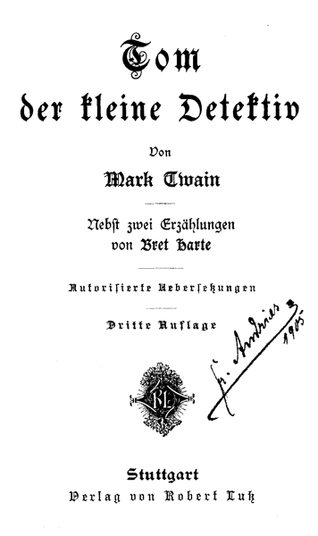

Autorisierte Uebersetzung
Dritte Auflage
Stuttgart
Verlag von Robert Lutz
Ein Jahr war herum, seitdem Tom Sawyer und ich unsern alten Neger Jim befreit hatten, der auf der Farm von Toms Onkel Silas in Arkansas als fortgelaufener Sklave in Ketten gelegt worden war. Nun wurde es Frühling; der gefrorene Boden taute auf und mildere Lüfte wehten. Immer näher winkte die Zeit, wo man wieder barfuß gehen konnte; dann kam das Murmelspiel an die Reihe, später Kreisel und Reifen oder man ließ den Drachen steigen, und wenn es endlich Sommer geworden war ging's zum Schwimmen. Doch das lag unabsehbar fern, und der Gedanke, wie lange es noch dauern muß, bis der Sommer kommt, macht unsereinen ganz schwermütig. Dann schleicht so ein armer Junge trübselig umher; er seufzt und stöhnt und weiß nicht was ihm fehlt. Er sucht sich ein einsames Fleckchen hoch oben am Berghang, wo er weit hinausschauen kann, wie der große Mississippi sich um eine Landzunge nach der andern windet, bis er mit der dämmerigen Ferne verschwimmt. Alles ist so still und feierlich wie beim Begräbnis, und man wünscht, man wäre selber tot und begraben, damit das Erdenleid ein Ende hätte.
Wißt ihr, wie die Krankheit heißt? Man nennt sie Frühlingsfieber. Und wenn sie einen befällt, hat man immerzu Herzweh, man weiß nicht wonach. Man möchte weit weg von dem ewigen Einerlei der alltäglichen Dinge, die einem zum Ueberdruß sind. Etwas Neues sehen und als Wanderer in fremde Länder ziehen, wo alles wunderschön, geheimnisvoll und noch nie dagewesen ist – ja, danach sehnt man sich. Doch nimmt man allenfalls auch mit einer kleineren Wanderschaft fürlieb und ist froh, wenn man überhaupt fort kann.
Also, wir beide litten stark am Frühlingsfieber, Tom Sawyer und ich. Aber es war gar keine Aussicht vorhanden, daß Tom etwa die Schule versäumen und über Land gehen durfte; seine Tante Polly hielt das für Zeitverschwendung und hätte es nie zugegeben. Recht mutlos und niedergeschlagen saßen wir eines Tages gegen Sonnenuntergang draußen auf den Steinstufen und bliesen Trübsal; da kam Tante Polly mit einem Brief in der Hand gegangen.
»Tom,« sagte sie, »du wirst wohl dein Bündel schnüren müssen, um dich nach Arkansas auf den Weg zu machen – Tante Sally verlangt nach dir.«
Ich hätte vor Freude aus der Haut springen mögen und glaubte nicht anders, als daß Tom seiner Tante um den Hals fallen und sie halbtot herzen würde; aber er saß stockstill da und that keinen Mucks. Warum er nur solch ein Narr war, die herrliche Gelegenheit, die sich ihm bot, nicht beim Schopf zu fassen? Sie konnte ihm leicht entgehen, wenn er jetzt nicht bald den Mund aufthat und sagte, wie froh und dankbar er wäre. Ich war ganz außer mir und dem Weinen nahe, als er immer weiter lernte und lernte und zuletzt ganz gelassen sagte:
»Es thut mir sehr leid, Tante, aber davon kann wirklich jetzt keine Rede sein!« – Da hätt' ich ihn totschießen können.
Tante Polly war wie vor den Kopf geschlagen und so voll Zorn über die freche Antwort, daß sie eine ganze Minute lang sprachlos dastand und mir Zeit ließ, Tom einen Puff zu geben und ihm zuzuflüstern:
»Bist du denn übergeschnappt? Wie kannst du ein solches Glück wegwerfen und mit Füßen treten?«
Aber das machte ihm keinen Eindruck. »Schweig still, Huck Finn,« brummte er, »soll sie's etwa merken, daß ich für mein Leben gern hin möchte? Gleich würden ihr tausend Zweifel kommen – lauter eingebildete Krankheiten, Gefahren und Hindernisse. Im Handumkehren hätte sie die Erlaubnis zurückgenommen. Laß mich nur machen, ich weiß schon, wie man sie behandeln muß.«
Na, so was wäre mir nie eingefallen; aber Tom hatte recht, wie immer. Ein Schlaukopf erster Sorte und nie unbesonnen – der läßt sich nicht verblüffen. Jetzt hatte Tante Polly sich vom Schreck erholt, und nun ging's los:
»So – davon kann nicht die Rede sein? Hat man je so was gehört! Und das sagst du mir ins Gesicht? – Auf der Stelle gehst du hinauf und packst deine Siebensachen. Kein Wort mehr, das bitt' ich mir aus – sonst setzt's Hiebe.«
Sie gab ihm noch eine Kopfnuß mit dem Fingerhut als wir uns duckten und rasch an ihr vorbeiliefen. Tom fing an zu flennen und wir sprangen die Treppe hinauf. Oben in seinem Zimmer fiel er mir um den Hals und war wie wahnsinnig vor Freude, weil's nun auf die Reise ging.
»Sie wird's bald bereuen, daß sie mich fortgelassen hat,« sagte er. »Aber nun weiß sie keinen Ausweg und kann's nicht wieder rückgängig machen, dazu ist sie viel zu stolz.«
In zehn Minuten war Tom mit Packen fertig, bis auf das, was seine Tante und Mary an Sachen dazu thun würden; dann wartete er noch zehn Minuten, damit sich ihr Zorn abkühlen und sie wieder sanft und freundlich werden sollte. »Wenn sie nur halb aus dem Häuschen ist,« sagte er, »braucht sie zehn Minuten sich zu erholen; habe ich sie aber ganz wild gemacht, dann dauert es zwanzig Minuten, und das ist jetzt so ein Fall.« Nun gingen wir rasch hinunter, weil wir vor Neugierde brannten zu hören, was Tante Sally eigentlich geschrieben hatte.
Der Brief lag auf Tante Pollys Schoß und sie saß ganz in Gedanken versunken da. Als wir Platz genommen hatten, sagte sie:
»Unsere Leute dort unten sind in großer Trübsal; sie hoffen, ihr werdet sie zerstreuen, du und Huck Finn, und ein rechter Trost für sie sein. Na, ihr beide seid mir ein paar nette Tröster! – Die Sache ist nämlich so: Ein Nachbar von ihnen, Brace Dunlap, hat vor drei Monaten um die Hand ihrer Benny angehalten. Sie haben lange mit der Antwort gezögert und ihm endlich geradeheraus erklärt, daß aus der Heirat nichts werden könnte. Das hat er ihnen sehr übel genommen, und nun machen sie sich Kummer darüber. Mir scheint, sie wollen's nicht ganz mit dem Nachbar verderben, denn um ihn zu versöhnen haben sie seinen nichtsnutzigen Bruder als Gehilfen auf der Farm in Dienst genommen, obgleich ihre Mittel das kaum erlauben und der Mensch ihnen so wie so nur im Wege ist. Wer sind denn diese Dunlaps?«
»Sie wohnen etwa eine Meile von Onkel Silas' Besitzung, Tante – alle Farmen dort in der Gegend sind gleich weit von einander entfernt. Brace Dunlap ist viel reicher als die andern Nachbarn und hat einen ganzen Haufen Neger. Er ist ein kinderloser Witwer, sechsunddreißig Jahre alt, dabei sehr stolz und hochfahrend, so daß alle Welt vor ihm zu Kreuze kriecht. Vermutlich hat er gedacht, er brauchte nur bei irgend einem Mädchen anzuklopfen, das er zur Frau wollte; es wird ihn nicht wenig gewundert haben, daß er Benny nicht bekommen kann. Sie ist nur halb so alt wie er und das süßeste, reizendste – – na, du kennst Benny ja selbst. Mir thut nur der arme alte Onkel Silas leid, der sich aufs äußerste einschränken muß und einen Thunichtgut wie den Jupiter Dunlap in Dienst nimmt, bloß um seinem hochnäsigen Bruder einen Gefallen zu thun.«
»Ist das ein Name – Jupiter! Wo hat er den her?«
»Es ist nur ein Spitzname; wie er eigentlich heißt, weiß wohl kein Mensch mehr. Man nennt ihn schon siebenundzwanzig Jahre lang so, seit er zum erstenmal baden ging. Da sieht der Schulmeister, daß er am linken Bein über dem Knie ein rundes braunes Mal hat, so groß wie ein Zehnpfennigstück und vier kleinere Mäler drum herum und sagt, es erinnere ihn an Jupiter und seine Monde. Den Kindern kam das komisch vor, sie fingen an ihn Jupiter zu nennen, und der Name ist ihm geblieben bis auf den heutigen Tag. Er ist groß und faul, verschmitzt, hinterhältig und feige, dabei aber doch wieder gutmütig. Keinen roten Heller nennt er sein eigen; Brace giebt ihm das Gnadenbrot und seine abgelegten Kleider, auch seine Verachtung obendrein. Jupiter trägt langes Haar, aber keinen Bart; er ist ein Zwilling.«
»So? Wie sieht denn der andere Zwillingsbruder aus?«
»Man sagt, er gleicht Jupiter auf ein Haar; wenigstens früher – jetzt hat man ihn seit sieben Jahren nicht gesehen. Als er neunzehn oder zwanzig Jahre alt war, wurde er bei einem Einbruchsdiebstahl ertappt und ins Gefängnis gesteckt. Aber er entkam nach dem Norden und beging bald hier bald dort Raub oder Diebstahl; doch das ist lange her. Jetzt ist er tot; das heißt, die Leute behaupten es – man hört eben nichts mehr von ihm.«
»Wie hieß denn der?«
»Jack.«
Es entstand eine Pause; die alte Dame war offenbar mit ihren Gedanken beschäftigt. Endlich sagte sie:
»Am meisten macht sich Tante Sally Sorge darüber, daß der Onkel immer in so furchtbaren Zorn gerät über diesen Jupiter.«
»Was,« rief Tom verwundert, »Onkel Silas? Das ist wohl nur ein Scherz – der kann ja gar nicht zornig werden!«
»Die Tante schreibt, er wird oft so wütend, daß sie immer fürchtet, er könnte sich thätlich an dem Mann vergreifen.«
»Da hört aber alles auf! – Onkel ist ja so sanft wie ein Lamm.«
»Er soll wie ausgewechselt sein durch das ewige Zanken und Streiten. Die Nachbarn reden schon darüber und schieben alle Schuld auf den Onkel, weil er ein Prediger ist und Frieden halten müßte. Tante Sally sagt, er schämt sich ordentlich, auf die Kanzel zu steigen; auch hat die Gemeinde das Vertrauen zu ihm verloren und er ist gar nicht mehr so beliebt wie früher.«
»Wie sonderbar! Onkel war doch immer so sanft und freundlich, so zerstreut, so träumerisch, so voller Einfalt und Herzensgüte, kurz ein wahrer Engel. Wie kann das nur zugegangen sein?«
Wir hatten riesiges Glück. Auf einem Raddampfer, der vom Norden gerade nach der Sumpfgegend von Louisiana steuerte, kamen wir den ganzen Mississippi bis zur Farm in Arkansas hinunter und brauchten nicht einmal in St. Louis das Boot zu wechseln. Eine Fahrt von fast tausend Meilen in einem Zug.
Man fühlte sich recht einsam auf dem Dampfer, denn die wenigen Passagiere waren alte Männer, die weit von einander auf Deck saßen und schliefen oder sich still verhielten. Vier Tage dauerte die Fahrt auf dem Oberen Mississippi, weil wir so oft auf den Grund gerieten, aber langweilig fanden wir Jungen es gar nicht – wie kann man sich langweilen, wenn man auf Reisen ist! –
Gleich nach der Abfahrt hatten Tom und ich herausgebracht, daß in der Kajüte neben unserer jemand krank liegen müsse, weil das Essen immer hineingetragen wurde. Wir erkundigten uns danach, und der Kellner sagte, der Mann da drinnen sähe gar nicht krank aus.
»Aber, er muß doch krank sein.«
»Wohl möglich – ich weiß nicht – mir scheint, er stellt sich nur an.«
»Woher glaubt Ihr das?«
»Na, wenn er krank wäre, würde er sich doch mal ausziehen, aber das thut er nicht. Wenigstens seine Stiefel behält er immer an.«
»Ist das möglich? Auch wenn er zu Bett geht?«
»Auch dann.«
Ein Geheimnis! Das war Wasser auf Toms Mühle.
»Wie heißt denn der Mann?«
»Phillips; in Alexandria ist er an Bord gekommen.«
»Und hat er noch andere Eigenheiten?«
»Nein – nur schrecklich ängstlich ist er. Tag und Nacht hält er seine Thür verschlossen, und wenn man klopft macht er nur ein Ritzchen auf und guckt erst wer da ist.«
»Wahrhaftig, den möchte ich gern zu sehen bekommen. Sagt mal – könntet Ihr nicht die Thür weit aufmachen, wenn Ihr wieder hineingeht, so daß – –«
»Bewahre. Das würde auch wenig nützen. Er stellt sich immer hinter die Thür.«
»Wißt Ihr was? Gebt mir Eure Schürze und laßt mich morgen das Frühstück hineintragen. Ihr bekommt auch einen Vierteldollar.«
Der Kellner war es zufrieden, wenn der Oberkellner nichts dagegen hätte.
»Mit dem will ich's schon abmachen,« sagte Tom. Und richtig, am nächsten Morgen hatten wir jeder eine Schürze um und trugen die Speisen hinein.
Tom hatte die ganze Nacht wach gelegen und sich den Kopf zerbrochen über Phillips und sein Geheimnis. Das war verlorene Mühe nach meiner Ansicht; viel besser, wir kamen selbst dahinter wie die Sachen wirklich standen, statt uns erst allerlei Falsches auszudenken. »Ich kann's ja abwarten,« dachte ich und ließ mich im Schlaf nicht stören.
Als Tom morgens an die Thür klopfte, guckte der Mann durch die Spalte, ließ uns herein und schloß rasch hinter uns zu. Aber, Donnerwetter – als wir ihn ansahen, hätten wir vor Schreck fast die Kaffeebretter fallen lassen.
»Du meine Güte – Jupiter Dunlap – wo kommt Ihr denn her?« rief Tom.
Natürlich war der Mann überrascht und zuerst sah er aus als ob er nicht wüßte, sollte er sich fürchten oder freuen. Er war ganz bleich geworden, doch bald bekam er wieder Farbe im Gesicht und fing an mit uns zu plaudern, während er sein Frühstück aß.
Nach einer Weile sagte er: »Ich bin gar nicht Jupiter Dunlap; doch heiß' ich auch nicht Phillips. Wenn ihr schwören wollt reinen Mund zu halten, will ich euch offenbaren wer ich bin.«
»Wir verraten nichts,« rief Tom; »aber wenn Ihr nicht Jupiter Dunlap seid, braucht Ihr mir Euern Namen nicht erst zu sagen.«
»Wieso?«
»Weil Ihr ihm gleicht wie ein Ei dem andern. Ihr seid sein Zwillingsbruder Jack.«
»Da kannst du recht haben. Aber, sag' mal, Junge, woher kennst du uns denn alle beide?«
Nun erzählte ihm Tom, was wir im vergangenen Sommer für Abenteuer auf Onkel Silas' Farm erlebt hatten. Als er hörte, daß wir alle seine Familienverhältnisse und seine eigene Lebensgeschichte kannten, wurde er ganz offenherzig und mitteilsam. Er sagte, er wäre von jeher ein Thunichtgut gewesen, auch jetzt sei er ein schlechter Kerl und würde wohl sein Lebtag ein Taugenichts bleiben. Freilich sei es ein gefährliches Ding und – –
Er brach plötzlich ab und hielt die Hand ans Ohr um zu lauschen. Wir sprachen kein Wort; ein paar Sekunden blieb alles mäuschenstill. Man hörte nichts als das Knarren des Holzwerks und das Bumbum der Maschine im Schiffsraum.
Um ihn zu beruhigen fingen wir an, ihm allerlei von seiner Familie zu berichten: daß Brace seine Frau vor drei Jahren verloren hätte und als er Benny heiraten wollte von ihr einen Korb bekommen habe, daß Jupiter bei Onkel Silas in Arbeit stehe, der immer in Streit mit ihm sei, und dergleichen mehr. Auf einmal lachte er laut auf.
»Jungens,« rief er, »euer Geplapper versetzt mich ganz in alte Zeiten zurück; mir wird ordentlich wohl dabei. Seit länger als sieben Jahren hab' ich so was nicht mit angehört. Was spricht man denn aber von mir in der Nachbarschaft?«
»Von Euch spricht man schon lange nicht mehr; höchstens alle Jubeljahr wird Euer Name einmal erwähnt.«
»Ist's möglich! Und wie kommt denn das?«
»Weil man Euch für längst gestorben hält.«
»Wirklich? Sprichst du auch die Wahrheit?« Er war in großer Erregung aufgesprungen.
»Mein Wort zum Pfande. Kein Mensch glaubt, daß Ihr noch am Leben seid.«
»Hurra, dann bin ich gerettet! Ich kann mich nach Hause wagen. Gewiß werden mir meine Verwandten beistehen und mich verbergen. Nicht wahr, ihr haltet reinen Mund! Schwört mir's noch einmal. Schwört, daß ihr mich nun und nimmermehr verraten werdet. Jungens, habt Erbarmen mit mir armem Teufel, der Tag und Nacht keine Ruhe findet und sich nirgends sehen lassen darf. Ich hab' euch nie etwas zuleide gethan und meine es nur gut mit euch, so wahr Gott im Himmel ist. Schwört, daß ihr schweigen wollt, und rettet mir das Leben.«
Natürlich thaten wir ihm den Willen und leisteten den Schwur. Er dankte uns von ganzem Herzen, der arme Kerl, ich glaube, er hätte uns am liebsten umarmt und geküßt.
Wir plauderten noch lange zusammen; dann holte er einen kleinen Reisesack herbei, öffnete ihn und bat, wir möchten nicht hinsehen. Wir drehten ihm den Rücken, und als wir uns wieder umwenden durften, war er ganz und gar verändert. Er hatte eine blaue Brille auf und einen langen braunen Knebel- und Schnauzbart, der ihm sehr natürlich zu Gesicht stand. Seine eigene Mutter hätte ihn nicht wiedererkannt. »Sehe ich jetzt noch meinem Bruder Jupiter ähnlich?« fragte er.
»Nein,« sagte Tom, »nichts erinnert mehr an ihn, außer Euer langes Haar.«
»Das lasse ich mir kurz scheren, ehe ich nach Hause komme. Er und Brace werden mein Geheimnis bewahren und ich kann als Fremder bei ihnen wohnen, ohne daß die Nachbarn Argwohn schöpfen. Wie gefällt euch mein Plan?«
Tom dachte eine Weile nach, dann sagte er:
»Huck und ich, wir werden natürlich kein Wort verraten, aber wenn Ihr nicht selber schweigt, so lauft Ihr doch Gefahr, erkannt zu werden. Es würde den Leuten auffallen, daß Eure Stimme genau so klingt, wie die von Jupiter, und dann erinnern sie sich vielleicht an den Zwillingsbruder, den sie für tot gehalten haben und der sich die ganze Zeit unter einem falschen Namen verborgen haben kann.«
»Alle Wetter, bist du klug!« rief er; »aber recht hast du. Ich muß mich taubstumm stellen, sobald ein Nachbar in meine Nähe kommt. Es hätte eine schöne Geschichte gegeben, wäre mir das nicht eingefallen. Aber ich wollte ja eigentlich gar nicht nach Hause, sondern nur an irgend einen Ort, wo ich vor den Burschen sicher bin, die mich verfolgen. Dann dachte ich den Bart und die Brille anzulegen, auch andere Kleider und – –«
Mit einmal lief er nach der Thür, hielt das Ohr daran und horchte. Er war bleich geworden und sein Atem flog.
»Es klang ganz als würde der Hahn einer Flinte gespannt,« flüsterte er. »Herr des Himmels, ist das ein erbärmliches Leben!« Matt und kraftlos sank er auf einen Stuhl und wischte sich den Schweiß von der Stirn.
Von da ab waren wir fast immer bei ihm; meist schlief einer von uns in seiner obern Koje. Er hatte sich so schrecklich einsam gefühlt und es war ihm ein Trost in seiner Not, jemand um sich zu haben, mit dem er reden konnte. Wir brannten natürlich vor Neugier, hinter das Geheimnis zu kommen; aber Tom sagte, wir sollten uns ja nichts merken lassen, dann würde er einmal ganz von selbst anfangen davon zu sprechen. Wollten wir ihn ausfragen, so würde er gleich Argwohn schöpfen und verschwiegen sein wie eine Auster. Es traf auch genau so ein. Daß er uns alles gern erzählt hätte, merkte man ihm leicht an, aber jedesmal wenn wir dachten: jetzt kommt's! überfiel ihn die Angst und er lenkte das Gespräch auf etwas anderes. Wir erfuhren's aber doch noch, und das ging so zu: Er hatte angefangen, uns in scheinbar gleichgültigem Ton nach den Passagieren im Zwischendeck zu fragen, die heraufkamen, um sich am Schenktisch Branntwein zu kaufen; wir versuchten sie zu beschreiben, aber das genügte ihm nicht, er wollte alle Einzelheiten wissen. Tom gab sich die größte Mühe und als er bei der Schilderung eines der rohesten und zerlumptesten Kerle angekommen war, fuhr Jack Dunlap schaudernd zusammen.
»O Jemine, das ist einer von ihnen! Sie sind wahrhaftig an Bord – dachte ich mir's doch! Ich hoffte, ich wäre ihnen entwischt, aber zweifelhaft war mir's immer. Nur weiter!«
Als Tom nun noch einen andern groben und schäbigen Zwischendecks-Passagier beschrieb, ward Dunlap schreckensbleich. »O weh, das ist der zweite, was fang' ich nur an? Hätten wir doch eine stürmische pechfinstere Nacht und ich könnte das Ufer erreichen. Aber sie haben gewiß jemand bestochen, den Stiefelputzer oder den Kofferträger, um mich zu bewachen. Gelänge es mir auch unbemerkt fortzukommen, so würde keine Stunde vergehen, bis sie es wüßten.«
Unruhig ging er auf und ab. Es dauerte gar nicht lange, da fing er an zu erzählen, wie es ihm bald gut bald schlecht ergangen sei, und ehe wir's uns versahen, kam er ins rechte Fahrwasser.
»Wir hatten alles genau verabredet,« sagte er. »Es handelte sich um zwei wunderschöne Diamanten, so groß wie Haselnüsse, in einem Juwelierladen zu St. Louis, die von jedermann bewundert wurden. Wir zogen feine Kleider an und spielten den Streich bei hellem Tage. Die Diamanten ließen wir uns ins Hotel kommen, als ob wir sie kaufen wollten, wenn sie uns gefielen, und schickten dem Juwelier statt dessen zwei Glaspasten, die wir in Bereitschaft gehalten hatten, mit dem Bescheid zurück, die Diamanten seien nicht vom reinsten Wasser und wir fänden den Preis von zwölftausend Dollars zu hoch.«
»Zwölf – tausend – Dollars!« rief Tom. »Waren sie denn wirklich so viel Geld wert?«
»Keinen Cent weniger.«
»Und ihr habt euch damit aus dem Staube gemacht?«
»Ohne alles weitere. Der Juwelier weiß vielleicht heutigen Tages noch nicht, daß er bestohlen worden ist. Aber wir hielten es doch für unklug, in St. Louis zu bleiben. Wir überlegten hin und her und beschlossen nach dem Obern Mississippi zu reisen. Vorher aber wickelten wir die Diamanten in ein Papier, schrieben unsere Namen darauf und übergaben das Päckchen dem Hoteldiener mit der Anweisung, es keinem von uns wieder einzuhändigen, wenn nicht die beiden andern als Zeugen zugegen wären. Dann machten wir einen Gang in die Stadt, aber jeder für sich allein; ich glaube, wir hatten alle den gleichen Plan, obgleich ich es nicht gewiß behaupten will.«
»Welchen Plan?« fragte Tom.
»Die andern zu berauben.«
»Was – einer sollte alles nehmen, nachdem er es erst mit Hilfe der andern bekommen hatte?«
»So meine ich's.«
Tom war ganz empört darüber; er sagte, es wäre der schändlichste, niederträchtigste Streich, von dem er je gehört hätte. Aber Jack Dunlap versicherte ihm, daß es in seiner Zunft nichts Ungewöhnliches sei. Wer sich einmal diesem Beruf gewidmet hätte, müßte selber auf seinen Vorteil bedacht sein, weil kein anderer Mensch das für ihn besorgen würde. Dann fuhr er in seinem Bericht fort:
»Es war natürlich schwierig, zwei Diamanten unter drei Leute zu teilen, das werdet ihr wohl einsehen. Hätten wir drei Diamanten gehabt, ja dann – – Aber, wozu noch weiter darüber reden; mehr als zwei waren es nun einmal nicht. So trieb ich mich denn in den Hintergassen umher und dachte nach, wie ich es wohl anstellen könnte, der Diamanten habhaft zu werden. War mir dies geglückt, dann wollte ich mich so verkleiden, daß mich niemand erkennen sollte, und auf und davon gehen. Ich kaufte mir zu diesem Zweck den falschen Bart, die blaue Brille und den bäuerischen Anzug, in dem ihr mich hier seht, und that alles in einen Reisesack, den ich mitgenommen hatte. Als ich vor einem Laden vorbeikam, in dem allerlei Waren feilgeboten wurden, sah ich durchs Fenster. Drinnen stand Bud Dixon, einer von meinen Spießgesellen. ›Ich will doch mal sehen, was der kauft,‹ dachte ich bei mir und verbarg mich, beobachtete aber alles genau. Na, was glaubt ihr wohl, daß er gekauft hat? – Doch das ratet ihr euer Lebtag nicht, Jungens. Nichts als einen winzig kleinen Schraubenzieher.«
»Wie sonderbar. Was wollte er denn damit?«
»Das fragte ich mich auch. Ich zerbrach mir den Kopf, konnte aber nicht ins reine kommen. Bei einem Trödler erstand er nun noch ein rotes Flanellhemd und zerlumpte Kleider; dieselben, die er jetzt anhat nach eurer Beschreibung. Nachdem ich das gesehen hatte, ging ich nach der Werft und versteckte meine Sachen auf dem Flußboot, mit dem wir fahren wollten. Als ich dann abermals durch die Straßen schlenderte, sah ich auch meinen andern Kameraden seine Einkäufe machen. Gegen Abend holten wir uns die Diamanten aus dem Hotel und gingen an Bord.
»Jetzt waren wir alle übel daran, denn wir durften uns nicht zu Bette legen; wie hätten wir sonst ein wachsames Auge aufeinander haben können. Es war nämlich schon seit ein paar Wochen böses Blut zwischen uns, und wir hielten nur zusammen, solange es das Geschäft erforderte. Zwei Diamanten für drei Personen, das war eben die Verlegenheit. Erst aßen wir zu Abend, dann rauchten wir und schlenderten dabei auf dem Deck umher bis gegen Mitternacht. Endlich gingen wir in meine Kajüte, schlossen die Thür zu, überzeugten uns, ob die Diamanten wirklich noch im Papier waren und legten sie auf die untere Koje, wo wir sie alle drei im Auge behalten konnten. Nun saßen wir stockstill und wurden immer schläfriger. Bud Dixon ließ sich endlich von der Müdigkeit übermannen; der Kopf sank ihm auf die Brust und er schnarchte, daß es eine Art hatte. Da deutete Hal Clayton zuerst auf die Diamanten und dann nach der Thür. Ich verstand ihn, streckte die Hand nach dem Papier aus und nahm es an mich. Wir warteten nun eine Weile, aber Bud schlief fort und regte sich nicht. Leise drehte ich den Schlüssel um und drückte auf die Klinke, dann schlichen wir auf den Zehen hinaus und machten die Thür geräuschlos hinter uns zu.
»Das Boot glitt ruhig durch die Flut; Wolken verbargen den Mond und wir wurden von niemand bemerkt. Ohne ein Wort zu reden schritten wir geradeswegs hinauf nach dem Sturmdeck und setzten uns am äußersten Ende neben das Deckfenster. Was das zu bedeuten hatte, wußten wir beide; es bedurfte keiner Erklärung. Wenn Bud Dixon aufwachte und sah, daß die Diamanten fort waren, würde er gleich hinter uns dreinkommen, denn er kannte keine Furcht. Dann wollten wir ihn über Bord werfen, oder bei dem Versuch unser Leben lassen. Mir schauderte, wenn ich nur daran dachte, denn ich bin nicht so mutig wie mancher andere; doch durfte ich meine Angst nicht zeigen, das wäre mir schlecht bekommen. Ich hoffte immer noch, das Boot würde irgendwo anlegen, so daß wir ans Land springen und allen Skandal vermeiden könnten, denn mit Bud Dixon war nicht zu spaßen.
»Aber eine Stunde nach der andern verging, wir schifften immer weiter und der Mensch kam nicht auf Deck. Als der Morgen zu dämmern anfing und Bud sich noch nicht sehen ließ, erwachte unser Argwohn. ›Er hält uns vielleicht zum Narren,‹ meinte Hal, ›mach' das Papier auf!‹ Das that ich und meiner Seel', es war nichts darin, als ein paar Zuckerkrümel. Deshalb also hatte er die ganze Nacht so ruhig schnarchen können. Ein schlauer Kerl, so wahr ich lebe. Er muß zwei ganz gleiche Papiere bereit gehalten und sie vor unserer Nase vertauscht haben.
»Wir waren nicht wenig verblüfft, doch hatten wir bald einen neuen Plan fertig. Es schien uns am klügsten, leise in die Kajüte zurückzuschleichen, das Papier wieder an Ort und Stelle zu legen und zu thun, als hätten wir nicht gemerkt, daß er uns mit seinem verstellten Schnarchen nur zum Besten hielt. Wir wollten ihm nicht von der Seite gehen und ihn am ersten Abend nach der Landung betrunken machen, seine Kleider durchsuchen, die Diamanten nehmen und ihm womöglich den Garaus machen; denn er würde uns immer auf den Fersen sein, um uns die Beute wieder abzujagen, und wir wären keinen Augenblick unseres Lebens sicher. Das Gelingen des Plans war mir jedoch sehr zweifelhaft. Bud betrunken zu machen, hatte keine Schwierigkeit, aber was nützte es, wenn wir hernach suchten und suchten und doch nichts fanden.
»Plötzlich fuhr mir ein Gedanke durch den Kopf, der mir fast den Atem benahm; doch dann wurde mir auf einmal ganz froh und leicht zu Mute. Ich hatte nämlich gerade meinen Stiefel in der Hand, um ihn anzuziehen, und als ich einen Blick auf die Sohle warf, mußte ich an den rätselhaften kleinen Schraubenzieher denken. Erinnert ihr euch noch daran?«
»Das will ich meinen,« rief Tom ganz aufgeregt.
»Na, wie ich den Absatz ansah, wußte ich auf einmal, wo Bud die Diamanten versteckt hatte. Schaut her – das Stahlplättchen hier ist mit kleinen Schrauben festgemacht; die einzigen Schrauben, die der Mensch an sich trug, waren an seinem Stiefelabsatz, und wenn er einen Schraubenzieher brauchte, so wußte ich wohl wozu.«
»Ist das nicht famos, Huck?« rief Tom dazwischen.
»Als wir in die Kajüte kamen, schnarchte Bud Dixon noch immer, und auch Hal Clayton schlief bald ein, aber ich nicht – in meinem Leben war ich noch nicht so wach gewesen; ich spähte auf dem Boden umher nach einem Stückchen Leder. Lange konnte ich nichts entdecken, aber endlich fand ich's. Es war ein rundes, kleines Pflöckchen, fast von der Farbe des Teppichs und etwa so dick wie die Spitze meines kleinen Fingers. ›Aha,‹ dachte ich, ›in dem Nest, wo das herausgekommen ist, liegt jetzt ein Diamant.‹ Auch das zweite Pflöckchen fand ich nach einigem Suchen.
»Nun stellt euch einmal diese Unverschämtheit vor! Der Kerl hatte sich ganz genau überlegt, was wir thun würden und wir Dummköpfe waren blindlings in die Falle gerannt. Während wir ihn oben auf dem Sturmdeck erwarteten, um ihn ins Wasser zu werfen, saß er unten, schraubte sich in aller Gemütsruhe die Stahlplättchen ab, schnitt Löcher in seine Absätze, steckte die Diamanten hinein und schraubte die Plättchen wieder fest. Ein Schlaufuchs erster Sorte, nicht wahr?«
»Nein, so was ist mir noch nicht vorgekommen!« rief Tom voller Bewunderung.
»Es war ein saueres Stück Arbeit, den ganzen Tag über noch zu thun, als ob wir einander beobachteten, das versichere ich euch. Gegen Abend landeten wir bei einem Städtchen in Missouri, kehrten in einer Schenke ein und ließen uns nach dem Nachtessen ein Schlafzimmer zu dreien im obern Stock geben. Der Wirt ging mit dem Licht voran und wir im Gänsemarsch hinterdrein, die Treppe hinauf. Ich kam zuletzt und schob meinen Reisesack unter den tannenen Tisch auf dem dunkeln Vorplatz. Wir ließen uns eine tüchtige Portion Whisky bringen und spielten Karten um Fünfcentstücke. Als wir die Wirkung des Whisky spürten, hörten wir beide auf zu trinken, schenkten aber Bud immer wieder ein, bis er toll und voll war. Er fiel vom Stuhl, lag am Boden und schnarchte.
»Nun ging es ans Geschäft. Ich schlug vor, wir wollten ihm die Stiefel ausziehen und unsere auch, damit es keinen Lärm machte, wenn wir ihn um und um kehrten und ihn durchsuchten. Das geschah, und ich stellte meine Stiefel neben Buds, damit ich sie bei der Hand hätte. Wir zogen ihn aus, befühlten alle Nähte seiner Kleider, suchten in seinen Taschen und Socken, auch inwendig in seinen Stiefeln, kurz überall; auch sein Bündel machten wir auf, fanden aber keine Diamanten. Als der Schraubenzieher zum Vorschein kam, fragte Hal: ›Was kann er wohl damit wollen?‹ Ich sagte, das wüßte ich nicht, aber sobald er sich abwandte steckte ich ihn ein. Endlich sah Hal ganz niedergeschlagen aus und meinte, wir müßten es aufgeben. Darauf hatte ich nur gewartet.
»›Etwas haben wir noch nicht durchsucht.‹
»›Was denn?‹ fragte er.
»›Seinen Magen.‹
»›Wahrhaftig, daran habe ich nicht gedacht. Das ist die Lösung des Rätsels, so wahr ich lebe. Wie wollen wir's anfangen?‹
»›Na,‹ sagte ich, ›bleib' du hier bei ihm, und ich will in die Apotheke gehen und ein Mittel holen, das die Diamanten rasch ans Tageslicht fördern soll.‹
»Er war's zufrieden, und ich zog vor seiner Nase Buds Stiefel an statt meiner eigenen, ohne daß er's merkte. Ein wenig zu groß waren sie mir freilich, aber das schadete nicht so viel, als wenn sie zu klein gewesen wären. Ich tappte im Dunkeln durch den Vorplatz, nahm den Reisesack mit und war in der nächsten Minute zur Hinterthür hinaus.
»Mit Siebenmeilenschritten ging's nun am Fluß entlang; mir war dabei gar nicht schlecht zu Mut, ich marschierte ja auf Diamanten. Nach der ersten Viertelstunde hatte ich schon eine große Strecke zurückgelegt. Alle fünf Minuten dachte ich daran, wie Hal Clayton auf meine Rückkehr wartete und immer unruhiger wurde. ›Jetzt fängt er an zu fluchen,‹ sagte ich zu mir, ›und allmählich geht ihm ein Licht auf. Er bildet sich ein, ich hätte die Diamanten gefunden, als wir Bud durchsuchten, sie heimlich in die Tasche geschoben und mir nichts merken lassen. Natürlich wird er gleich meiner Spur folgen, aber ich habe doch wenigstens einen guten Vorsprung.‹
»Indem kam ein Mann auf einem Maultier dahergeritten, und ohne zu überlegen sprang ich ins nächste Gebüsch. Das war dumm! Eine Weile hielt der Mann still, um zu sehen, ob ich wieder herauskäme, dann ritt er weiter. Das konnte mir sehr zum Nachteil gereichen, wenn er etwa auf Hal Clayton stieß und der ihn ausfragte.
»Um drei Uhr morgens kam ich nach Alexandria und als ich den Raddampfer vor Anker liegen sah, war ich heilfroh und glaubte, jetzt sei ich gerettet. Es dämmerte bereits und ich ging an Bord, ließ mir die Kajüte hier geben, zog diese Kleider an und setzte mich neben das Ruderhaus, damit mir nichts entgehen könne. Ich wartete mit großer Ungeduld auf die Abfahrt des Bootes, aber es rührte sich nicht. Die Maschine wurde erst ausgebessert, doch davon hatte ich keine Ahnung.
»Es wurde Mittag bis wir absegelten und ich hatte mich längst in der Kajüte eingeschlossen. Schon vor dem Frühstück sah ich nämlich von fern einen Mann herankommen, dessen Gang mich an Hal Clayton erinnerte und mir wurde übel und weh. Wenn er mich hier auf dem Boot ausfindig machte, so saß ich wie eine Ratte in der Falle. Er brauchte nur zu warten bis ich ans Land ging und mir zu folgen. An einem abgelegenen Ort würde er mich zwingen die Diamanten herauszugeben und dann – ja dann war's um mich geschehen. O, es ist gräßlich – entsetzlich! Und wenn ich mir nun vorstelle, daß der andere auch an Bord ist! Sagt selbst, Jungens, ist das nicht ein schreckliches Mißgeschick? – Aber, nicht wahr, ihr verlaßt mich nicht! Ihr helft einem armen Teufel durch, den man zu Tode hetzen will. Auf den Knieen will ich euch verehren, wenn ihr mir beisteht und mich rettet.«
Wir thaten was wir konnten, um ihn zu beruhigen: wir versprachen ihm unsere Hilfe, machten allerlei Pläne und redeten ihm seine übergroße Furcht aus. Da wurde er bald wieder zuversichtlicher und zuletzt schraubte er gar die Plättchen von seinen Absätzen und hielt die Diamanten bald so bald so gegen das Licht. Nein, wie sie funkelten und glitzerten und ihr Feuer nach allen Seiten ausstrahlten! Es war schön, das muß ich sagen. Aber er kam mir doch vor wie ein rechter Narr. Ich an seiner Stelle hätte den beiden Spießgesellen die Diamanten ausgeliefert und ihnen gesagt, nun sollten sie ans Land gehen und mich in Ruhe lassen. Doch das fiel ihm gar nicht ein. Er meinte, es wäre ein ganzes Vermögen; der Gedanke es zu verlieren schien ihm unerträglich.
Zweimal mußten wir anlegen, um die Maschine in Ordnung zu bringen, was eine ganze Weile dauerte. Die Nacht war aber nicht dunkel genug; er hätte sich schwerlich unbemerkt aus dem Staube machen können. Gegen ein Uhr nachts kamen schwarze Wolken am Himmel herauf, ein Gewitter war im Anzug. Wir hatten an einem Holzhof angelegt, noch etwa vierzig Meilen von Onkel Silas' Farm, und Jack hielt die Gelegenheit für günstig. Es regnete stark, der Sturm brach los, und die Leute, die das Holz einluden, zogen sich zum Schutz grobe Säcke über den Kopf. Auch Jack verschafften wir einen. Er nahm seine Reisetasche, lief aufs Hinterdeck, kam dann wie die andern Matrosen nach vorn marschiert und ging mit ihnen ans Land. Als er aus dem Bereich der Fackeln war und in der Finsternis verschwand, holten wir tief Atem und waren voller Dank und Freude. Allein das Vergnügen dauerte nicht lange. Kaum zehn Minuten vergingen, da stürmten die beiden schlimmen Gesellen auf Deck; sie sprangen ans Ufer und wir sahen sie nicht wieder. Bis zum Morgengrauen warteten wir und hofften sie würden zurückkommen, allein vergebens. Vielleicht hatten sie aber doch Jack nicht mehr einholen können und seine Spur verloren; darauf setzten wir unser ganzes Vertrauen.
Er wollte am Fluß entlang gehen und sich in dem Ahornwäldchen hinter Onkel Silas' Tabakfeld verbergen. Dort hatten wir versprochen ihn zu treffen, sobald es dämmerig würde, und ihm Nachricht zu bringen, ob seine Brüder Brace und Jupiter zu Hause wären und keinen fremden Besuch hätten.
Tom und ich sprachen lange darüber, wie es ihm wohl ergehen würde. Rannten seine Verfolger flußaufwärts statt abwärts, dann war er gerettet. Aber das ließ sich kaum erwarten. Wahrscheinlich, meinte Tom, würden sie ihm tagsüber auf den Fersen bleiben, ohne daß er Argwohn schöpfte, und sobald es dunkelte ihn umbringen und ihm die Stiefel fortnehmen. – Das betrübte uns sehr.
Erst spät am Nachmittag war die Maschine fertig ausgebessert. Als wir nicht weit von Onkel Silas' Farm anlegten, ging die Sonne bereits unter. So liefen wir denn zuerst spornstreichs nach dem Ahornwäldchen, um Jack den Grund der Verzögerung mitzuteilen, damit er auf uns wartete, bis wir bei Brace gewesen wären und wüßten, wie die Sachen standen. Gerade als wir keuchend um die Ecke bogen und die Ahornbäume schon von fern sahen, kamen zwei Männer quer über den Weg in das Wäldchen gesprungen und wir hörten einen gräßlichen Hilfeschrei, der sich mehrmals wiederholte. »Jetzt haben sie den armen Jack umgebracht,« sagten wir und flohen voll Todesangst nach dem Tabakfeld. Kaum hatten wir uns dort versteckt und zitterten noch wie Espenlaub, als wir abermals zwei Männer an uns vorbeilaufen und in dem Wäldchen verschwinden sahen. Schon im nächsten Augenblick kamen ihrer vier wieder heraus: zwei hatten die Flucht ergriffen und zwei verfolgten sie.
Kalter Angstschweiß perlte uns auf der Stirn, während wir auf dem Boden lagen und horchten; doch vernahmen wir keinen andern Laut als das Pochen unserer Herzen. Immer mußten wir an den Ermordeten drüben im Wäldchen denken und uns gruselte als wäre uns ein Gespenst in nächster Nähe. Plötzlich kam der Mond hinter den Baumwipfeln hervor, groß, rund und glänzend, wie ein Gesicht, das durch die Eisenstäbe der Gefängniszelle guckt. Schwarze Schatten und weiße Flecken huschten hierhin und dorthin; es war unheimlich still ringsum, nur der Nachtwind stöhnte in den Zweigen. Da flüsterte Tom auf einmal: »Sieh! – was ist das?«
»Du brauchst mich nicht noch unnötig zu erschrecken; ich bin sowieso schon halb tot,« rief ich.
»Aber, so sieh doch, was da aus dem Ahornwäldchen herauskommt!«
»Hör' auf, Tom!«
»Eine riesige Gestalt; sie kommt auf uns zu!«
Er hatte vor Erregung kaum Atem genug zum flüstern. Ich wollte nicht hinsehen und doch that ich's. Wir knieten jetzt beide auf der Erde, stützten das Kinn auf den Lattenzaun und starrten in Schweiß gebadet die Straße 'runter. Die Gestalt ging im Schatten der Bäume, man konnte sie erst ordentlich sehen, als sie dicht in unserer Nähe war und ins helle Mondlicht hinaustrat. Da fielen wir um wie vom Donner gerührt – kein Zweifel, es war Jack Dunlaps Geist! –
Ein paar Minuten lagen wir regungslos da; als wir wieder aufsahen war das Gespenst verschwunden.
»Du,« flüsterte Tom, »Gespenster sehen doch immer grau und neblig aus, als ob sie lauter Dunst wären; aber dieses gar nicht.«
»Nein; ich hab' seine Brille und den Schnurrbart ganz deutlich erkannt.«
»Ja, und den Anzug – die grün und schwarz gewürfelten Hosen –«
»Die feuerrote Weste von Baumwollsammet mit den gelben Punkten –«
»Die ledernen Stege unten am Hosenbein – einer war nicht angeknüpft –«
»Ja, und der Hut – eine richtige hohe Angströhre mit breiter Krempe.«
»Glaubst du, Huck, daß es ebensolches Haar hatte wie er?«
»Ja – doch bin ich nicht ganz sicher.«
»Ich auch nicht; aber den Reisesack hab' ich in seiner Hand gesehen.«
»Haben denn Gespenster einen Reisesack, Tom?«
»Warum nicht, Huck? Aber natürlich aus Gespensterstoff, wie die Kleider und alles. Stell' dich doch nicht so dumm an!«
Jetzt kamen Bill Withers und sein Bruder Hans an uns vorüber. Sie waren in ihr Gespräch vertieft, wir verstanden aber alles, was sie sagten:
»Es sah aus als könnte er es kaum mehr schleppen,« meinte Bill.
»Jawohl, schwer schien es zu sein. Es war gewiß ein Neger, der dem alten Pfarrer Silas Korn gestohlen hat,« sagte Hans.
»Das dachte ich gleich und that, als bemerkte ich ihn nicht.«
»So hab' ich's auch gemacht. Hahaha!«
Also, Onkel Silas war so unbeliebt geworden, daß die Leute lachten, wenn ihm ein Dieb sein Korn stahl! Wie war das nur möglich?
Bald hörten wir wieder Stimmen; je näher sie kamen, um so lauter wurde das Gespräch. Es waren zwei Nachbarn, Lem Beebe und Jim Lane.
»Wer?« fragte Jim, – »Jupiter Dunlap?«
»Ja, ganz gewiß,« entgegnete Lem.
»Hm. Vor etwa einer Stunde, eben als die Sonne unterging, hab' ich ihn mit dem Spaten gesehen; sie gruben ein Stück Land um, er und der Pfarrer. Seinen Hund wollte er uns leihen, sagte er, aber er selber käme heute abend wahrscheinlich nicht.«
»Er wird wohl zu müde sein von der schweren Arbeit.«
»Verlaß dich drauf. Haha!«
Sie gingen lachend weiter; Tom sprang auf und wir folgten ihnen von fern. Dem Gespenst ganz allein zu begegnen, wäre doch gar zu unbehaglich gewesen.
Dies alles geschah am 2. September, einem Sonnabend. Den Tag werde ich nie vergessen; man wird bald erfahren weshalb.
Schon sahen wir die Lichter vom Hause zu uns herüberscheinen, und die Hunde kamen alle herbeigelaufen, uns zu begrüßen, da sagte Tom:
»Warte noch 'nen Augenblick. Wenn wir jetzt 'reinkommen, meinst du wohl, ich müßte gleich unser ganzes Abenteuer erzählen, daß alle Mund und Nase aufsperren vor Verwunderung?«
»Versteht sich; solche Gelegenheit wirst du dir doch nicht entgehen lassen, Tom.«
»Na, da irrst du dich gewaltig. Kein Sterbenswörtchen verraten wir davon und zwar aus sehr nahe liegenden Gründen. Sag 'mal, Huck – ging das Gespenst barfuß?«
»Bewahre, es hatte ja Stiefel an.«
»Hast du das wirklich gesehen? Kannst du 'nen Eid darauf leisten?«
»Jawohl, das kann ich.«
»Ich auch. Und das ist der beste Beweis dafür, daß die Diebe die Diamanten nicht gefunden haben. Natürlich nicht – die zwei andern Männer haben sie ja vertrieben, ehe sie der Leiche die Stiefel ausziehen konnten; deshalb trug sie das Gespenst auch noch.«
»Stiefel aus dem Geisterstoff wie die andern Kleider, nicht wahr, Tom?«
»Freilich. Und weißt du, Huck, was nun geschieht? Die zwei Männer erzählen, sie hätten das Geschrei gehört, die Mörder verjagt, aber den Fremden nicht retten können. Nun kommt die Totenschau, besichtigt alles an Ort und Stelle, und ehe man die Leiche begräbt, werden ihre Sachen versteigert, um die Kosten herauszuschlagen. Dann ist unser Glück gemacht.«
»Wieso?«
»Na, das ist doch klar: Wir kaufen die Stiefel für zwei Dollars.«
»Und kriegen die Diamanten?«
»Versteht sich. Eines schönen Tages wird man eine hohe Belohnung dafür bieten – wenigstens tausend Dollars. Und das ist unser Geld. – Jetzt komm ins Haus; aber von den Räubern, den Diamanten und dem Mord weißt du keine Silbe – das merke dir.«
»Wie sollen wir es aber Tante Sally erklären, wenn sie fragt, warum wir erst so spät kommen und wo wir so lange geblieben sind?«
»Das überlasse ich dir; du wirst schon eine Ausrede finden.«
Das sah Tom ganz gleich. Er war viel zu wahrheitsliebend, um selbst eine Lüge zu sagen.
Wir gingen nun quer über den Hof, wo wir zu unserer Freude alles unverändert fanden, und kamen in den bedeckten Gang zwischen dem Holzschuppen und der Küche. Da hingen noch mancherlei Gegenstände, die wir kannten, unter anderm auch Onkel Silas' grüner Arbeitskittel mit der Kapuze und dem weißen Flicken zwischen den Schultern, der immer aussah, als hätte ihn jemand mit 'nem Schneeball geworfen. Rasch drückten wir auf die Klinke der Stubenthür und traten ein.
Tante Sally wirtschaftete im Zimmer herum; in einer Ecke saßen die Kinder auf einem Häufchen, in der andern las der Onkel im Gebetbuch. Tante fiel uns gleich vor Freuden um den Hals, dann zauste sie uns bald an den Haaren, bald drückte sie uns ans Herz, während ihr helle Thränen über die Backen liefen, so froh war sie, uns wiederzusehen.
»Wo habt ihr Taugenichtse euch denn so lange herumgetrieben?« rief sie. »Ich hab' mir um euch schier die Seele aus dem Leib geängstet. Eure Siebensachen sind schon vor 'ner Ewigkeit angekommen, und viermal hab' ich das Essen wieder aufgewärmt, damit ihr nicht zu warten braucht. Die Haut sollte man euch über die Ohren ziehen. Aber nun setzt euch nur, ihr müßt ja halb verhungert sein; setzt euch, ihr armen Jungen, und laßt's euch schmecken.«
O, wie behaglich saß sich's dort an der reich besetzten Tafel! Onkel Silas sprach sein längstes Tischgebet und bald stand ein aufgehäufter Teller an meinem Platz. Als ich gerade im besten Schmausen war, fragte die Tante plötzlich, wo wir denn gewesen wären.
Ich hatte mir's schon zum voraus überlegt:
»Wir sind zu Fuß durch den Wald gegangen,« sagte ich, »da sind uns Lem Beebe und Jim Lane begegnet und haben uns aufgefordert mit ihnen Heidelbeeren zu suchen; Jupiter Dunlap wollte ihnen seinen Hund dazu leihen, das hatte er ihnen gerade versprochen – –«
»Wo haben sie ihn gesehen?« fiel mir der alte Silas auf einmal so hastig in die Rede, daß ich verwundert dreinschaute und ganz verwirrt wurde, weil er mich mit durchbohrenden Blicken ansah. Aber ich nahm mich zusammen und antwortete: »Als Ihr mit ihm das Stück Land umgrubet, bei Sonnenuntergang.«
»Hm,« sagte er mit enttäuschter Miene und nahm weiter keine Notiz von mir, während ich fortfuhr: »Wir gingen mit, und – –«
»Schweig still mit deinem Unsinn, Huck Finn,« rief jetzt Tante Sally entrüstet; »wer hat je davon gehört, daß man bei uns im September Heidelbeeren pflückt und obendrein zur Nachtzeit? Was soll der Hund dabei – vielleicht die Heidelbeeren aufspüren?« –
»Sie sagten – sie hätten eine Laterne – –« stammelte ich.
»An dem allen ist kein wahres Wort. Ich weiß, ihr habt irgend einen dummen Streich gemacht, da müßte ich euch beide nicht kennen. Na, Tom, heraus mit der Sprache, nicht erst lange gefackelt!«
Tom nahm eine gekränkte Miene an. »Wie kannst du nur den armen Huck schelten, Tante, bloß weil er sich versprochen hat. Er meint natürlich Erdbeeren, wenn er Heidelbeeren sagt. Das weiß doch ein jedes Kind, daß man in der ganzen Welt – nur nicht hier in Arkansas – einen Hund und eine Laterne mitnimmt, wenn man Erdbeeren suchen geht.«
Nun riß aber Tante Sally der Geduldsfaden; sie wurde ernstlich böse und schüttete einen ganzen Schwall von Worten, die sie gar nicht schnell genug heraussprudeln konnte, über unsere schuldigen Häupter aus. Darauf hatte Tom aber wie gewöhnlich gerechnet. Er ließ sie sich immer in Zorn reden und schwieg mäuschenstill, bis ihre Hitze verflogen war; dann wollte sie meist vor Aerger keine Silbe mehr über die ganze Angelegenheit hören. So kam es auch diesmal. Als sie sich heiser gesprochen hatte und einen Augenblick Atem schöpfen mußte, sagte Tom in aller Seelenruhe:
»Und trotzdem weiß ich doch, Tante –«
»Schweig' still,« rief sie; »du thust den Mund nicht mehr auf, das sage ich dir!«
So kamen wir aus aller Verlegenheit und von der Verzögerung unserer Ankunft war nicht mehr die Rede. Das hatte Tom wirklich schlau eingerichtet.
Benny machte ein sehr ernstes Gesicht und seufzte auch hin und wieder; aber bald fing sie an sich nach Toms Geschwistern Mary und Sid zu erkundigen und besonders nach Tante Polly. Allmählich erheiterte sich auch Tante Sallys Miene, ihre gute Laune kehrte zurück, sie fragte uns dieses und jenes und war wieder so gut und lieb wie immer, so daß unser Abendessen noch einen ganz lustigen Verlauf nahm. Nur der alte Silas beteiligte sich nicht an der Unterhaltung; er war unruhig und zerstreut, auch stieß er oft so tiefe Seufzer aus, daß es einem in der Seele wehthat, ihn so verstört und bekümmert zu sehen.
Eine Weile nach dem Abendessen klopfte es an die Thür; ein Neger steckte den Kopf herein, er trug seinen alten Strohhut in der Hand und sagte unter vielen Bücklingen und Kratzfüßen, sein Herr, Massa Brace, warte draußen am Zaun und lasse den Massa Silas fragen, wo sein Bruder wäre, der zum Essen nicht nach Hause gekommen sei.
Da fuhr Onkel Silas so heftig auf, wie ich es noch nie von ihm gehört hatte: »Bin ich etwa seines Bruders Hüter?« Gleich nachher war es ihm aber wieder leid, er sank in sich zusammen und sprach im sanftesten Ton:
»Du brauchst ihm das nicht zu wiederholen, Billy, ich bin seit einigen Tagen gar nicht wohl und so reizbar, daß ich meine Worte nicht wägen kann. Er ist nicht hier, sage ihm das.«
Als der Neger fort war, ging der alte Mann ruhelos in der Stube auf und ab, wobei er fortwährend unverständliche Worte murmelte und sich mit den Händen ins Haar fuhr. Es war recht jämmerlich anzusehen; doch Tante Sally flüsterte uns zu, nicht acht auf ihn zu geben. Sie sagte, seit so viel Mißgeschick über ihn gekommen sei, gerate er oft tief in Gedanken und wisse kaum mehr, was er thue und treibe. Auch bei Nacht wandle er viel häufiger als früher im Schlaf, entweder nur im Hause oder auch draußen im Freien. Wenn wir ihn einmal dabei beträfen, sollten wir ihn ruhig gehen lassen und ihn ja nicht aufwecken. Es könne ihm niemand helfen, außer Benny, die ihn am besten zu behandeln verstehe.
Auch diesmal schlich sie sich an seine Seite, als er anfing müde zu werden von dem ewigen Hin- und Herwandern. Sie schlang ihren Arm um ihn und ging mit, bis er lächelnd auf sie herabschaute und sich niederbeugte um sie zu küssen. Allmählich wich der gequälte Ausdruck aus seinem Gesicht und er ließ sich von ihr auf sein Zimmer geleiten. Es war eine Freude, den liebevollen Verkehr von Vater und Tochter zu sehen.
Tante Sally mußte nun die Kinder zu Bett bringen und da Tom und ich anfingen uns zu langweilen, machten wir noch einen Gang bei Mondschein in das Feld, wo die reifen Wassermelonen standen. Wir aßen nach Herzenslust und besprachen dabei mancherlei. Tom meinte, er hege nicht den geringsten Zweifel, daß Jupiter ganz allein an dem Streit schuld sei. Bei erster Gelegenheit werde er sich Gewißheit darüber verschaffen und dann Onkel Silas nach Kräften bereden ihn fortzuschicken.
Wohl zwei Stunden lang schwatzten, rauchten und schmausten wir dort. Als wir ins Haus zurückkehrten war es ganz still und dunkel; alle hatten sich zur Ruhe begeben.
Tom, dem nichts entging, bemerkte jetzt, daß der alte grüne Arbeitskittel seltsamerweise von dem Nagel verschwunden war, wo er ihn noch vorhin hatte hängen sehen. Dann suchten wir unsere Schlafkammer auf.
Im Nebenzimmer hörten wir Benny noch lange herumhantieren; sie sorgte sich gewiß um ihren Vater und fand keinen Schlaf. Auch wir waren viel zu aufgeregt, um zu Bette zu gehen; so blieben wir denn wach, unterhielten uns im Flüsterton und waren in recht trübseliger Stimmung. Wir sprachen immer wieder von dem Ermordeten und dem Gespenst, bis uns so unheimlich und gruselig zu Mute wurde, daß von Einschlafen keine Rede sein konnte.
Es war schon spät in der Nacht, als mich Tom plötzlich mit dem Ellenbogen stieß und nach dem Fenster deutete. Ich sah hin; drunten im Hof trieb sich ein Mann herum, doch konnte ich ihn bei der Dunkelheit nicht erkennen. Jetzt kletterte er über den Zaun und da kam gerade der Mond heraus und schien auf den weißen Flicken des alten Arbeitskittels.
»Siehst du den Nachtwandler,« sagte Tom. »Ich wollte, wir dürften ihm folgen und sehen, wo er hingeht mit der langen Schaufel, die er über der Schulter trägt. Er biegt nach dem Tabakfeld ein – nun ist er verschwunden. Der arme Onkel, – es thut mir so leid, daß er gar keine Ruhe findet.«
Wir warteten lange, aber er kam nicht zurück; vermutlich hatte er einen andern Heimweg eingeschlagen. So legten wir uns denn endlich nieder und verfielen in einen unruhigen Schlaf, der uns mit tausenderlei Beängstigungen quälte. Im Morgengrauen waren wir schon wieder wach; ein Gewitter war heraufgezogen, Blitze zuckten, der Donner krachte, der Wind schüttelte die Bäume, der Regen fuhr in Strömen nieder und die Rinnsteine wurden zu rauschenden Bächen.
»Höre mal, Huck,« sagte Tom, »mir kommt's sehr seltsam vor, daß man noch gar nichts von Jack Dunlaps Ermordung gehört hat. Die Männer, von denen Hal Clayton und Bud Dixon verjagt wurden, haben die Sache doch in der nächsten halben Stunde sicherlich überall erzählt und sie muß sich wie ein Lauffeuer von Farm zu Farm verbreitet haben. Solche große Neuigkeit kommt doch alle dreißig Jahr höchstens zweimal vor. Es ist wirklich merkwürdig, Huck, ich kann es nicht begreifen. Wäre nur erst das Gewitter vorüber, damit wir hinauskönnten um zu sehen, ob nicht irgend jemand auf der Straße davon anfängt. Wir müssen dann natürlich sehr überrascht und entsetzt sein.«
Es war schon heller lichter Tag, als der Regen aufhörte. Wir schlenderten die Straße hinunter, begrüßten jeden, der uns begegnete, sagten wann wir angekommen wären, wie wir die Unserigen verlassen hätten, wie lange wir zu bleiben gedächten, und dergleichen mehr; aber kein Mensch äußerte eine Silbe über den Mord, was uns höchlich wundernahm. Tom meinte, wenn wir in das Ahornwäldchen gingen, würde die Leiche ganz einsam und verlassen daliegen und keine Menschenseele weit und breit zu sehen sein. Wahrscheinlich hätten die Verfolger die Mörder tief in den Wald hinein gejagt, diese hätten sich endlich umgewendet und sich auf sie geworfen. Nachdem sie einander alle umgebracht, wäre natürlich niemand mehr am Leben gewesen, um die Nachricht zu verbreiten.
Während dieser Reden waren wir unversehens nach dem Ahornwäldchen gekommen. Mir lief der kalte Schweiß den Rücken hinunter und ich wäre um nichts in der Welt auch nur einen Schritt weiter gegangen. Doch Tom ließ es keine Ruhe – er mußte wissen, ob der Ermordete die Stiefel noch anhatte. So kroch er denn ins Dickicht, kam aber schon im nächsten Augenblick in größter Erregung wieder heraus.
»Huck, er ist fort,« rief er.
»Im Ernst, Tom?« fragte ich starr vor Staunen.
»Jawohl, er ist wirklich fort; es ist nichts mehr von ihm zu sehen. Der Boden ist nur etwas zertrampelt und wenn blutige Spuren da waren hat sie der Regen verwaschen; es ist lauter Schmutz und Morast da drinnen.«
Nun faßte ich mir ein Herz und überzeugte mich mit eigenen Augen, daß kein Leichnam mehr da war.
»Verwünscht,« rief ich, »die Diamanten sind weg!«
»Glaubst du nicht, daß die Mörder zurückgekommen sind und ihn fortgeschleppt haben?«
»Höchst wahrscheinlich. Wo meinst du wohl, daß sie ihn versteckt haben können?«
»Wie soll ich das wissen?« sagte er ärgerlich. »Es ist mir auch einerlei. Mir war nur an den Stiefeln etwas gelegen. Nach der Leiche werde ich den Wald nicht durchsuchen; meinetwegen mag sie sein wo sie will. Die Hunde werden sie sowieso bald aufspüren.«
Wir schlichen betrübt und enttäuscht nach Hause zurück. Mein Lebtag hatte mich noch keine Leiche so geärgert und betrogen wie diese.
Beim Frühstück ging es nicht sehr munter zu. Tante Sally sah alt und müde aus; sie ließ die Kinder unter einander zanken und streiten ohne ihnen zu wehren, wie sie es sonst immer that. Tom und ich waren so voller Gedanken, daß wir gar nicht sprachen und Benny mochte wohl die ganze Nacht kein Auge zugethan haben. So oft sie den Kopf ein wenig hob und nach ihrem Vater hinschaute, mußte sie mit den Thränen kämpfen. Der Alte ließ das Essen auf seinem Teller kalt werden, er rührte keinen Bissen an, redete kein Wort, sondern sann und sann nur immer vor sich hin.
Als die Stille am allerdrückendsten war, steckte der Neger wieder den Kopf durch die Thür und sagte, Massa Brace hätte schrecklich Angst um seinen Bruder Jupiter, der noch immer nicht heimgekommen wäre. Massa Silas sollte doch so gut sein und – –
Das Wort erstarb ihm auf den Lippen, denn Onkel Silas hatte sich plötzlich aufgerichtet. Er sah den Neger an und zitterte dabei so, daß er sich am Tisch festhalten mußte. Die Kehle war ihm wie zugeschnürt; erst nach einer Weile stammelte er mühsam:
»Er glaubt wohl – er glaubt wohl – was denkt er sich eigentlich? – Sag' ihm – sag' ihm –« kraftlos sank er wieder in seinen Stuhl zurück. »Geh fort – geh fort!« murmelte er so leise, daß man es kaum verstehen konnte.
Der Neger machte sich erschrocken aus dem Staube, während Onkel Silas die Hände rang und seine Augen verdrehte, als läge er im Sterben; es war ein schrecklicher Anblick. Wir saßen alle da, wie festgebannt, nur Benny erhob sich leise, Thränen liefen ihr die Wangen herunter, sie trat neben den Stuhl ihres Vaters, bettete sein graues Haupt an ihrer Brust und streichelte ihn sanft und liebevoll. Dann winkte sie uns, wir sollten fortgehen, und wir verließen das Zimmer so still, als läge ein Toter darin.
In furchtbar ernster Stimmung schlugen Tom und ich den Weg nach dem Walde ein. Wie ganz anders war es doch hier bei unserm Besuch letzten Sommer gewesen: alles so glücklich und friedevoll, Onkel Silas so heiter, so wunderlich und voll kindlicher Einfalt und dabei so hochgeachtet von jedermann. Jetzt hatte er entweder den Verstand schon verloren, oder man mußte doch jeden Augenblick fürchten, daß er von Sinnen käme.
Es war ein sonniger, herrlicher Tag; weiter und weiter gingen wir über die Hügel nach der Ebene zu und konnten uns nicht satt sehen an den Bäumen und Blumen ringsum. Daß es in dieser schönen Welt auch Unglück gab, schien uns ganz unbegreiflich. Traurig zu sein, kam uns wie ein Unrecht vor.
Auf einmal fühlte ich, daß mir der Atem stockte; ich hielt Tom am Arm fest und mein Herz pochte wie ein Schmiedehammer.
»Da ist es!« rief ich; wir sprangen hinter einen Busch und Tom flüsterte:
»St! – Mach' keinen Lärm.«
Es saß gerade am Ende der kleinen Waldwiese auf einem Holzblock und stützte den Kopf in die Hand. Vergebens bemühte ich mich, Tom zur Flucht zu überreden; er rührte sich nicht vom Fleck, denn er meinte, vielleicht würde er sein Lebtag keine so günstige Gelegenheit mehr haben, ein Gespenst zu sehen, deshalb wollte er dieses nach Herzenslust betrachten und wenn es sein Tod wäre. So blieb ich denn auch da und riß die Augen auf, obgleich mir's gar nicht wohl dabei zu Mute war.
»Der arme Jack,« raunte mir Tom zu, denn schweigen konnte er nicht; »alle seine Sachen hat er an, wie er's uns vorausgesagt hat. Auch das Haar hat er sich kurz geschoren. Daß ein Gespenst so natürlich aussehen könnte, hätte ich nie gedacht.«
»Ich auch nicht; man würde es überall wiedererkennen.«
»Ganz wie bei Lebzeiten. Und am meisten wundert mich noch, daß es bei Tage umgeht. Die andern kommen immer erst nach Mitternacht zum Vorschein. Du, Huck, mit dem ist's nicht ganz richtig; es hat kein Recht, sich jetzt hier herumzutreiben, das kannst du mir glauben. Jack wollte sich taubstumm stellen, weil ihn die Nachbarn sonst an der Stimme erkannt hätten. Meinst du, das Gespenst würde das auch thun, wenn ich's jetzt anriefe?«
»Tom, ums Himmels willen, du wirst doch so was nicht wagen!«
»Sei nur ganz ruhig, ich denke nicht dran. Aber, was ist das – jetzt kratzt es sich am Kopf – ein Gespenst kann's doch nicht jucken, das ist ja aus lauter Dunst! Wahrhaftig, Huck, ich glaube, es ist gar kein wirkliches Gespenst, es müßte doch sonst –«
»Was denn, Tom?«
»Durchsichtig sein, so daß man die Büsche dahinter sehen könnte.«
»Du hast recht, sein Körper ist so fest wie der einer Kuh. Weißt du, ich fange an zu glauben –«
»Jetzt nimmt es den Mund voll Tabak und fängt an zu kauen – das ist ja unmöglich, es hat doch keine Zähne. Höre, Huck!«
»So sprich doch!«
»Es ist gar kein Gespenst, sondern Jack Dunlap wie er leibt und lebt! – Haben wir etwa eine Leiche im Ahornwäldchen gefunden?«
»Nein, keine Spur.«
»Weißt du auch warum? – Weil nie eine da war.«
»Aber Tom, wir haben doch das Geschrei gehört!«
»Ist das etwa ein Beweis, daß jemand umgebracht worden ist? – Erst sahen wir vier Männer laufen und dann kam dieser aus dem Wald gegangen. Wir hielten ihn für einen Geist, aber es war so wenig ein Geist wie du einer bist. Es war Jack Dunlap selbst und der sitzt jetzt dort drüben und spielt den Fremden und Taubstummen, ganz wie er's mit uns verabredet hatte. Der – ein Gespenst! Nein, Fleisch und Bein ist er, da wett' ich alles drauf.«
Ich sah nun auch unsern Irrtum ein, und wir waren beide herzlich froh, daß Jack nicht umgebracht worden war. Was sollten wir aber jetzt thun? Ihn anreden oder vorgeben, ihn nicht zu kennen? Tom hielt es für das beste, ihn selber zu fragen, wie er es haben wolle. Also ging er geradeswegs auf ihn zu, während ich mich etwas im Hintergrund hielt, für den Fall, daß es doch ein Gespenst wäre.
Als Tom ganz nahe bei ihm war sagte er: »Guten Tag! Wir freuen uns sehr, Euch wiederzusehen, Huck und ich. Fürchtet nur nicht, daß wir Euch verraten. Wenn Ihr es für besser haltet wollen wir thun, als hätten wir Euch nie gekannt. Sagt nur, ob Euch das recht ist. Ihr könnt Euch dann fest auf uns verlassen; wir würden uns eher die Hand abhacken als Euch Schaden thun.«
Zuerst zeigte er sich sehr überrascht uns zu sehen und keineswegs erfreut; aber bei Toms Rede erhellte sich sein Gesicht und zuletzt lächelte er, nickte mehrmals mit dem Kopf, machte allerlei Zeichen mit den Händen und sagte: »Goo – goo – goo – goo,« ganz wie ein Taubstummer.
Indessen sahen wir ein paar von Steffen Nickersons Angehörigen, die jenseits der Wiese wohnten, daherkommen. »Ihr macht Eure Sache ganz ausgezeichnet,« sagte Tom, »natürlich müßt Ihr Euch üben so viel Ihr könnt, an uns so gut wie an den andern, damit Ihr auf Eurer Hut seid und niemals aus der Rolle fallt. Wir wollen Euch auch so wenig wie möglich in den Weg kommen und keiner Seele verraten, daß wir Euch kennen. Laßt es uns aber ja wissen, wenn Ihr einmal Hilfe braucht.«
Als wir den Nickersons begegneten, hielten sie uns natürlich an und wollten wissen, wer der Fremde dort drüben sei, wie er heiße, woher er komme, ob er Baptist oder Methodist, liberal oder konservativ wäre und was dergleichen Fragen mehr sind, die wir Amerikaner bei jeder neuen Erscheinung gleich auf der Zunge haben. Tom erwiderte jedoch, er hätte aus den Zeichen des Taubstummen und seinen Naturlauten nicht klug werden können. Mit großer Spannung beobachteten wir nun von ferne, wie sie Jack auszuforschen begannen. Erst als wir ihn seine Zeichen machen sahen und wußten, daß alles gut ablaufen würde, beruhigten wir uns wieder und machten, daß wir weiter kamen, weil wir gern während der Zwischenstunde beim Schulhaus sein wollten.
Es war recht ärgerlich, daß uns Jack nicht erzählen konnte, was sich in dem Ahornwäldchen zugetragen hatte und ob er fast umgebracht worden wäre; aber Tom bemerkte ganz richtig, daß ein Mensch in Jacks Lage nicht vorsichtig genug sein könne und am besten thäte still zu schweigen, um sich keiner Gefahr auszusetzen.
In der Zwischenstunde ging es sehr lustig zu, alle Knaben und Mädchen freuten sich, uns wiederzusehen. Die beiden Hendersons waren auf ihrem Schulweg dem Taubstummen begegnet und wurden deshalb von den übrigen sehr beneidet, da alle vor Neugier brannten, ihn zu sehen, und von gar nichts anderm reden mochten.
Es kostete Tom keine kleine Ueberwindung, nichts zu verraten. Hätten wir alles erzählen dürfen, wie würde man uns bewundert haben! Aber viel heldenhafter war es doch noch, Stillschweigen zu bewahren. Unter Millionen Jungen hätte man nicht zwei finden können, die das fertig brachten. Davon war Tom wenigstens überzeugt und schließlich mußte er es doch am besten wissen.
In den nächsten zwei oder drei Tagen ging der Taubstumme bei den Nachbarn aus und ein und war bald allgemein beliebt. Jeder war stolz, mit einer so merkwürdigen Persönlichkeit zu verkehren; man lud ihn zum Frühstück, zu Mittag und zum Abendessen ein, bewirtete ihn aufs beste und wurde nicht müde, ihn anzustarren. Gern hätten die Leute mehr über ihn erfahren, aber seine Zeichen verstanden sie nicht – er wußte wohl selbst nicht, was sie bedeuteten. Seine Naturlaute bewunderten sie dagegen sehr und freuten sich, so oft er sie hören ließ. Auch reichte er eine Tafel herum nebst Schieferstift, damit man Fragen an ihn stellen könne; die Antworten, die er aufschrieb, konnte aber niemand lesen, außer Brace Dunlap, dem es freilich auch Mühe machte; doch fand er häufig wenigstens den Sinn heraus. Er sagte, der Taubstumme käme von weit her und habe früher im Wohlstand gelebt, dann sei er Schwindlern in die Hände gefallen, die sein Vertrauen mißbraucht hätten. Jetzt sei er arm und wüßte nicht, wie er sein Brot erwerben solle.
Man lobte Brace allgemein, daß er sich des Fremden so hilfreich annahm. Er hatte ihm ein kleines Blockhaus zur Wohnung angewiesen, seine Neger mußten es in Ordnung halten und ihm zu essen bringen so viel er wollte.
Auch in unser Haus kam der Taubstumme öfters, weil es Onkel Silas Trost gewährte, einen Menschen zu sehen, der auch von Trübsal heimgesucht war wie er. Tom und ich thaten, als hätten wir ihn noch nie erblickt, und auch er stellte sich uns gegenüber ganz fremd. Der Familienkummer wurde in seiner Gegenwart ohne Scheu besprochen, was ja im Grunde nichts schadete. Gewöhnlich schien er gar nicht acht darauf zu geben, aber manchmal that er es doch.
Als drei Tage vergangen waren, fingen die Nachbarn an, sich über Jupiter Dunlaps Ausbleiben zu beunruhigen. Einer fragte den andern, wo er wohl hingeraten sein könne; man schüttelte den Kopf und fand es höchst seltsam und unerklärlich. Abermals verstrichen ein paar Tage; da entstand ein Gerücht, daß er vielleicht ermordet wäre. Das machte natürlich großes Aufsehen und ein endloses Gerede. Am Samstag zogen die Leute truppweise in den Wald, um die Leiche aufzustöbern. Tom und ich gingen auch mit und halfen suchen. Tom konnte vor Aufregung tagelang weder essen noch schlafen und glühte vor Eifer, weil er meinte, wenn wir den Leichnam fänden, würden wir berühmt werden und unser Name in aller Munde sein.
Die andern bekamen es zuletzt satt und gaben das Suchen auf. Aber Tom Sawyer dachte nicht daran, er war unermüdlich. Die ganze Nacht schloß er kein Auge, er sann über einen Plan nach und als der Morgen dämmerte, war ihm ein Licht aufgegangen. In größter Hast kam er und holte mich aus dem Bette.
»Rasch Huck, wirf deine Kleider über,« rief er, »ich hab's! Wir brauchen einen Schweißhund.«
Zwei Minuten später liefen wir im Dunkeln am Fluß entlang nach dem Dorfe zu. Der alte Schmied Jeff Hooker hatte einen Hund, den wollte sich Tom von ihm borgen.
»Die Spur ist zu alt,« sagte ich, »und geregnet hat es auch.«
»Das schadet nichts, Huck. Wenn der Leichnam irgendwo im Walde steckt, findet ihn der Hund gewiß. Er wird es schon wittern, an welcher Stelle man den Ermordeten verscharrt hat. Auch auf die Spur des Mörders wird er uns helfen, und wenn wir die erst haben, verfolgen wir sie ohne Unterlaß, bis wir den Kerl fangen. Dann werden wir berühmt, so wahr ich lebe.«
»Na, laß uns nur erst die Leiche finden,« sagte ich, um sein Feuer etwas zu dämpfen, »daran werden wir wohl für heute genug haben. Wer weiß, ob überhaupt eine da ist; vielleicht ist der faule Jupiter einfach durchgebrannt und gar nicht ermordet worden.«
Doch davon wollte Tom nichts hören. »Wie kannst du nur so reden, Huck, das ist ganz abscheulich. Schämst du dich nicht, ein solcher Spielverderber zu sein, wenn wir gerade die beste Gelegenheit haben uns auszuzeichnen und unsern Ruhm zu begründen.«
»Ach was, ich nehme alles zurück; mache es nur ganz wie du willst, Tom. Ob Jupiter tot ist oder lebendig, kümmert mich im Grunde wenig.«
Bald war Tom wieder Feuer und Flamme für das Unternehmen, bis wir vor die Schmiede des alten Jeff Hooker kamen, der seine Begeisterung gewaltig abkühlte.
»Den Hund könnt ihr haben,« sagte er, »aber ihr werdet keinen Leichnam finden, weil keiner da ist. Die Leute haben ganz recht, daß sie nicht weiter suchen. Sobald sie anfingen nachzudenken, mußte sich eben jeder sagen, daß von einem Mord gar keine Rede kein kann. Ich will euch auch sagen weshalb: Wenn jemand einen Menschen umbringt, thut er es doch nicht ganz ohne Grund, das werdet ihr mir zugeben. Na, und warum sollte man wohl dem Jupiter Dunlap, diesem Schafskopf, nach dem Leben trachten? Etwa aus Rache? Meint ihr, daß irgend jemand einen Groll gegen solchen Menschen hat?«
Tom fand kein Wort der Erwiderung; von diesem Gesichtspunkt aus hatte er sich die Sache noch nicht überlegt.
»Oder glaubt ihr, man hätte ihn berauben wollen? Haha! Das wird's wohl sein. Die Hosenschnallen hat man ihm gestohlen und deshalb – –«
Der Alte wollte sich vor Lachen ausschütten; er mußte sich die Seiten halten, um nicht zu bersten. Tom machte ein ganz verblüfftes Gesicht; ich sah's ihm an, daß er sich meilenweit weg wünschte, während Jeff Hooker von neuem anhub: »Wer irgend Grütze im Kopf hat, mußte sich's ja gleich sagen, daß der Faulpelz nur ausgekniffen ist, weil er nach seiner schweren Arbeit eine Weile herumbummeln wollte. Paßt auf, nach ein paar Wochen kommt er wieder und lacht sich ins Fäustchen. – Wenn du aber nach seinem Leichnam suchen willst, Tom, so nimm den Hund und thu's, ich werd' dich nicht hindern.«
Tom war zu weit gegangen, er konnte nicht mehr zurück. »Na, also, macht ihn nur von der Kette los,« sagte er. Der Alte that es und sah uns lachend nach, während wir beschämt abzogen.
Der Hund kannte uns, wedelte mit dem Schwanz und sprang mit lustigen Sätzen vor uns her, im Genuß seiner Freiheit. Aber Tom verzog keine Miene, er war tief gekränkt, daß der alte Hooker ihn lächerlich gemacht hatte, und verwünschte das ganze Abenteuer.
In düsterm Schweigen schlichen wir durch die Hintergassen heim. Als wir eben um die Ecke unseres Tabakfeldes bogen, stieß der Hund ein klägliches Geheul aus. Wir eilten herzu und sahen, wie er mit aller Macht die Erde aufwühlte und dann und wann den Kopf laut heulend zur Seite wandte.
In dem vom Regen durchweichten Boden ließ sich deutlich ein eingesunkenes längliches Viereck erkennen, das aussah wie ein Grab. Stumm standen wir da und sahen einander an. Der Hund hatte kaum ein paar Zoll tief gegraben, als er einen Gegenstand zu packen bekam und ihn herauszerrte; es war ein Männerarm, der im Aermel steckte.
»Komm fort, Huck,« stieß Tom keuchend heraus, »die Leiche ist gefunden.«
Mich durchrieselte es kalt. Rasch liefen wir nach der Landstraße und holten die ersten besten Leute, die uns begegneten. Sie nahmen einen Spaten mit und gruben den Leichnam aus. Nein, war das eine Aufregung! Sein Gesicht konnte man nicht mehr erkennen, aber das war auch nicht nötig. Alle riefen:
»Der arme Jupiter; das sind die Kleider, die er zuletzt getragen hat.«
Ein paar Männer eilten ins Dorf, um die Nachricht zu verbreiten und dem Friedensrichter Anzeige zu machen, damit die Totenschau gehalten werden könnte. Auch Tom und ich liefen spornstreichs nach Hause; ganz atemlos kamen wir zu Onkel Silas, Tante Sally und Benny hereingestürzt und Tom rief:
»Wir zwei, ich und Huck, haben ganz allein mit einem Schweißhund Jupiter Dunlaps Leiche gefunden. Alle hatten es aufgegeben; ohne uns hätte man sie niemals entdeckt. Er ist doch ermordet worden, mit einem Knüttel hat man ihn totgeschlagen; aber ich will den Mörder schon finden, er soll mir nicht entgehen, so wahr ich Tom heiße.«
Tante Sally und Benny sprangen bleich und erschrocken auf, aber Onkel Silas fiel vorn über vom Stuhl auf den Boden und rief ächzend: »Gott erbarme sich meiner – du hast ihn schon gefunden!« –
Bei diesen gräßlichen Worten standen wir wie zu Stein erstarrt und konnten wohl eine Minute lang kein Glied rühren. Sobald wir uns etwas von dem Schreck erholt hatten, hoben wir den alten Mann auf und setzten ihn wieder in seinen Stuhl; er ließ sich von Benny streicheln und küssen, auch die arme Tante versuchte ihn zu beruhigen. Doch waren sie beide so verwirrt und außer sich, daß sie kaum wußten, was sie thaten. Am allerunglücklichsten war aber Tom selbst. Daß er seinen Onkel vielleicht ins Verderben gestürzt hatte, war ihm fürchterlich. Hätte er nicht solchen Ehrgeiz gehabt, berühmt zu werden, und hätte das Suchen nach der Leiche aufgegeben, wie die andern Leute, so wäre es ja am Ende nie herausgekommen. Doch nicht lange, da besann er sich und änderte seine Gedanken:
»Sag' das nicht noch einmal, Onkel Silas; solche Reden sind gefährlich und es ist auch kein Körnchen Wahrheit daran,« versicherte er mit Bestimmtheit.
Tante Sally und Benny atmeten erleichtert auf bei diesen Worten; aber der Onkel schüttelte traurig den Kopf.
»Nein, nein – ich hab's gethan – der arme Jupiter – ich hab's gethan!« – sagte er im Ton der Verzweiflung, während ihm die Thränen über die Backen liefen. Es war schrecklich mit anzuhören.
Dann erzählte er weiter, es sei an dem Tage geschehen, als Tom und ich ankamen, bei Sonnenuntergang. Jupiter hatte ihn gequält und geärgert, bis ihn der Zorn übermannte und er ihm mit seinem Stock über den Kopf schlug, daß er zu Boden stürzte. Sofort bereute er seine Hitze; er kniete neben Jupiter hin, hob ihm den Kopf auf und bat, er solle doch sprechen und sagen, daß er nicht tot sei. Der kam auch bald wieder zu sich; doch als er sah, wer ihm den Kopf hielt, sprang er, wie zu Tode erschrocken, auf, war mit einem Satz über den Zaun, lief nach dem Walde zu und verschwand. Da hoffte Onkel natürlich, er hätte ihm keinen Schaden gethan.
»Aber ach,« fuhr er fort, »nur die Furcht hatte ihm dies letzte Fünkchen Lebenskraft eingeflößt, das rasch erlosch; im Gebüsch ist er dann zusammengebrochen, wo ihm niemand beistehen konnte, und ist gestorben.«
Der alte Mann jammerte und weinte, er sagte, er sei ein Mörder, er trüge das Kainszeichen und brächte seine Familie in Schande und Schmach. Seine Missethat würde entdeckt werden und ihn an den Galgen bringen.
»Davon ist gar keine Rede,« sagte Tom. »Du hast ihn gar nicht umgebracht. Ein einziger Schlag ist nicht gleich tödlich. Den Mord hat ein anderer begangen.«
»Nein, ich habe es gethan, sonst niemand. Wer hätte auch außer mir etwas gegen ihn haben sollen?«
Er sah uns an als hoffte er, wir würden jemand nennen können, der dem harmlosen Menschen grollte; allein das war vergebens, wir mußten alle verstummen. Als er das sah, überfiel ihn die Trauer von neuem; seine jammervolle Miene war zum Erbarmen.
»Aber halt,« rief Tom plötzlich, »jemand muß ihn doch begraben haben. Wer kann das denn –«
Weiter kam er nicht. Ich wußte wohl warum, und es überlief mich kalt. Hatten wir doch beide Onkel Silas in jener Nacht mit der langen Schaufel über der Schulter gesehen. Auch Benny mußte ihn bemerkt haben; sie hatte einmal etwas davon erwähnt. Tom war nun eifrig bemüht, Onkel zu überreden, daß er sich nicht verraten solle; wir andern stimmten ihm bei und sagten, wenn Onkel schwiege, würde man es nie erfahren und er dürfe sich nicht selbst anklagen, weil es uns allen das Herz brechen würde, wenn ihm ein Leid geschähe. Es würde niemand Nutzen bringen und die Seinigen nur unglücklich machen. Zuletzt versprach er es denn auch und wir suchten ihn nun nach Kräften zu trösten und aufzuheitern. Ueber der ganzen Sache würde bald Gras wachsen, sagten wir, und kein Mensch würde mehr daran denken. Gegen Onkel Silas Verdacht zu schöpfen könne niemand auch nur im Traum einfallen; er stehe in viel zu gutem Ruf und sei so lieb und freundlich gegen jedermann.
»Ueberlegt es doch nur,« sagte Tom mit großem Nachdruck, »es liegt ja auf der Hand: Seit so und so vielen Jahren ist Onkel Silas hier Prediger gewesen ohne einen Pfennig Gehalt; alles mögliche Gute hat er gethan, von Alt und Jung wird er geliebt und geachtet. Wie sollte er, der friedliebendste Mensch von der Welt, der sich nie in fremde Angelegenheiten gemischt hat, dazu kommen, sich thätlich an jemand zu vergreifen? Es kann gar kein Argwohn gegen ihn entstehen; das ist ebenso gut ein Ding der Unmöglichkeit wie – –«
»Im Namen und Auftrag des Staates Arkansas verhafte ich Euch als den Mörder des Jupiter Dunlap,« rief in diesem Augenblick der Sheriff an der Thür.
Es war furchtbar. Tante Sally und Benny klammerten sich weinend und schreiend an Onkel Silas und wollten ihn nicht fortlassen; auch die Neger liefen heulend herbei, es war ein herzzerreißender Auftritt und ich machte, daß ich zum Haus hinauskam.
Als er nach dem kleinen Dorfgefängnis geführt wurde, begleiteten wir ihn alle, um ihm Lebewohl zu sagen. Tom hatte schon einen Plan fix und fertig im Kopf, wie wir ihn in einer dunkeln Nacht heldenmütig befreien wollten. Aber als er gegen Onkel etwas davon verlauten ließ, kam er übel an. Der arme Alte meinte, es sei seine Pflicht, zu dulden, was das Gesetz über ihn verhänge; selbst wenn die Thür des Gefängnisses offen stünde, würde er von dort nicht wanken und weichen. Natürlich war Tom sehr enttäuscht, doch mußte er sich drein ergeben. Den Gedanken, seinen Onkel zu befreien, gab er aber deshalb noch lange nicht auf; er betrachtete das als seine Schuldigkeit, denn er fühlte sich gewissermaßen verantwortlich für ihn.
Er versprach auch Tante Sally, daß er Tag und Nacht nicht ruhen würde, bis er Onkels Unschuld ans Licht gebracht hätte, sie solle sich nur keinen Kummer machen. Tante umarmte ihn zärtlich, dankte ihm und sagte, sie sei überzeugt, er werde alles thun, was in seinen Kräften stehe. Dann bat sie uns noch, wir möchten Benny helfen das Haus und die Kinder zu versorgen, und nachdem wir mit Thränen von ihr Abschied genommen hatten, kehrten wir nach der Farm zurück. Tante wollte bei der Frau des Gefängniswärters wohnen bleiben, bis im Oktober die Gerichtsverhandlung stattfand.
Der nächste Monat war für uns alle sehr traurig. Die arme Benny nahm sich zusammen, so gut sie konnte; auch Tom und ich trugen unser möglichstes zur allgemeinen Aufheiterung bei, aber das half wenig. Wir besuchten die alten Leute jeden Tag, was furchtbar trübselig war. Onkel Silas hatte meist schlaflose Nächte oder er wandelte im Schlaf; sein Aussehen war erbärmlich, auch nahm er körperlich und geistig so sehr ab, daß wir alle fürchteten, er würde vor Kummer krank werden und sterben.
Wenn wir ihm Mut zusprachen, schüttelte er nur den Kopf und meinte, wir wüßten nicht, welche Last es wäre, einen Mord auf der Seele zu tragen, sonst würden wir anders reden. Wie oft wir ihm auch wiederholten, daß es kein Mord, sondern fahrlässiger Todschlag wäre, er ließ sich nicht davon abbringen. Ja, als der Tag der Verhandlung näher rückte, war er ganz bereit einzugestehen, er habe den Mann mit Vorbedacht getötet. Das verschlimmerte die Sache natürlich hundertfach; Tante Sally und Benny verzehrten sich fast vor Angst. Doch nahmen wir Onkel das Versprechen ab, daß er im Beisein anderer keine Silbe von dem Mord sagen wolle und das war wenigstens ein Trost.
Den ganzen Monat über zerbrach sich Tom den Kopf, um einen Ausweg zu finden. Viele Nächte mußte ich mit ihm aufbleiben und Pläne schmieden, aber wir arbeiteten uns nur unnütz ab, es führte alles zu nichts. Ich war zuletzt so mutlos und niedergeschlagen, daß ich Tom riet es aufzugeben; doch er war anderer Meinung und ließ nicht nach, sich mit immer neuen Entwürfen das Hirn zu zermartern.
So kam Mitte Oktober der Tag der Gerichtsverhandlung. Wir waren alle da und der Saal natürlich gedrängt voll. Der arme alte Onkel Silas sah selbst fast aus wie ein Toter, so hohläugig, abgezehrt und jämmerlich. Benny und Tante Sally saßen ihm rechts und links zur Seite, tief verschleiert und gramerfüllt. Aber Tom saß bei unserm Verteidiger und redete in alles mit herein; der Anwalt ließ ihn gewähren und der Richter auch. Manchmal hielt er's für besser, dem Verteidiger die Sache ganz aus der Hand zu nehmen, denn der war nur ein Winkeladvokat und verstand so gut wie gar nichts.
Die Vereidigung der Geschworenen war vorüber und der öffentliche Ankläger hielt seine Rede. Er sagte so schreckliche Dinge von Onkel Silas, daß Tante Sally und Benny zu weinen anfingen. Was er über den Mord berichtete, nahm uns fast den Atem, es war so ganz anders als Onkels Erzählung. Er sagte, er werde beweisen, daß zwei zuverlässige Zeugen gesehen hätten, wie Onkel Silas den Jupiter Dunlap umgebracht habe. Es sei mit Vorbedacht geschehen, denn er habe gerufen, er wolle ihn kalt machen, während er mit dem Knüttel zuschlug, dann habe er Jupiter ins Gebüsch geschleppt, der sei aber schon ganz tot gewesen. Später sei Onkel Silas wiedergekommen und habe die Leiche ins Tabakfeld geschafft, was zwei Männer bezeugen könnten. In der Nacht habe er sie dann begraben und sei auch dabei von jemand beobachtet worden.
Ich sagte mir, der arme alte Onkel müsse uns belogen haben, weil er sich darauf verließ, daß ihn niemand gesehen hätte und er Tante Sally und Benny nicht das Herz brechen wollte. Daran hatte er ganz recht gethan; jeder, der nur das geringste Gefühl im Leibe hatte, würde auch gelogen haben, um den beiden, die doch gar nichts dafür konnten, Kummer und Herzeleid zu ersparen. Unser Verteidiger machte ein bedenkliches Gesicht und auch Tom war einen Augenblick wie auf den Mund geschlagen, doch nahm er sich rasch wieder zusammen und that ganz zuversichtlich – aber es war ihm schlecht dabei zu Mute, das weiß ich. Unter den Zuhörern entstand eine furchtbare Aufregung während der Rede.
Als der Ankläger fertig war, setzte er sich und die Zeugen wurden aufgerufen. Zuerst kamen mehrere um zu beweisen, daß Onkel Silas dem Ermordeten feindlich gesinnt gewesen war. Sie sagten, sie hätten ihn öfters Drohungen gegen Jupiter ausstoßen hören; es sei zuletzt so schlimm geworden, daß alle Welt darüber gesprochen habe. Der Ermordete, dem um sein Leben bangte, habe gegen mehrere von ihnen geäußert, Onkel Silas würde ihn gewiß noch einmal umbringen.
Das Kreuzverhör, das Tom und unser Verteidiger mit diesen Zeugen anstellten, nützte nichts; sie beharrten bei ihrer Aussage.
Zunächst betrat Lem Beebe den Zeugenstand. Das rief mir den Tag unserer Ankunft ins Gedächtnis, wie Lem mit Jim Lane an uns vorbeigegangen war und gesagt hatte, er wollte sich einen Hund von Jupiter Dunlap borgen. Alles zog wieder an meiner Erinnerung vorüber: Bill und Hans Withers, die von einem Neger redeten, der Onkel Silas Korn gestohlen hatte, und unser Geist, der aus dem Ahornwäldchen kam und uns so erschreckte. Der saß jetzt leibhaftig vor mir und nahm als Taubstummer und Fremder obendrein einen besondern Stuhl innerhalb der Schranken ein; da konnte er gemütlich die Beine übereinander schlagen, während die übrigen Zuhörer so zusammengepfercht waren, daß sie kaum Platz zum Atemholen hatten.
Lem Beebe leistete den Eid und begann: »Am zweiten September gegen Sonnenuntergang ging ich mit Jim Lane am Zaun des Angeklagten vorbei. Da hörten wir lautes Reden und Streiten, ganz in unserer Nähe, nur das Haselgebüsch war dazwischen. Wir erkannten die Stimme des Angeklagten, welche rief: ›Ich hab' dir's oft gesagt, ich bringe dich noch um!‹ dann sahen wir einen Knüttel, der hoch emporgehoben wurde und wieder hinter dem Gebüsch verschwand; wir hörten einen dumpfen Schlag und gleich darauf ein Aechzen. Nun krochen wir leise näher und als wir durch den Zaun guckten, sahen wir Jupiter Dunlap tot am Boden liegen und neben ihm stand der Angeklagte mit dem Knüttel in der Hand. Er schleppte die Leiche fort, um sie zu verbergen; wir aber duckten uns, damit wir nicht gesehen würden, und machten, daß wir wegkamen.«
Es war schrecklich. Den Zuhörern erstarrte fast das Blut in den Adern und im ganzen Saal herrschte lautlose Stille. Erst als der Zeuge fertig war, hörte man die Leute seufzen und stöhnen und sie sahen einander mit entsetzten Mienen an.
Am meisten mußte ich mich aber über Tom verwundern. Bei den ersten Zeugen hatte er aufgepaßt wie ein Schweißhund und sobald einer mit seiner Aussage zu Ende war, fuhr er drauf los und that alles, was er konnte, um ihn auf Unwahrheiten zu ertappen und sein Zeugnis zu entkräften. Auch jetzt, als Lem anfing und nichts davon sagte, daß er mit Jupiter gesprochen hatte und sich seinen Hund borgen wollte, glühte Tom vor Eifer und ich merkte, wie er nur darauf lauerte, Lem ins Kreuzverhör zu nehmen. Dann dachte ich, würden wir beide als Zeugen auftreten und erzählen, was wir aus Lems eigenem Munde gehört hatten. Ich sah wieder zu Tom hin, aber der war auf einmal wie ausgewechselt. Er hörte gar nicht mehr auf das, was Lem sagte, sondern saß ganz in sich versunken da, als schweiften seine Gedanken in weiter, weiter Ferne. Als Lem fertig war, stieß unser Verteidiger Tom mit dem Ellenbogen an; einen Augenblick sah er verwirrt auf und meinte: »Nehmen Sie den Zeugen ins Verhör, wenn Sie wollen; aber mich lassen Sie in Ruhe – ich muß nachdenken.«
Na, da hörte doch alles auf; es ging über meine Begriffe. Ich sah auch wie Benny und ihre Mutter den Schleier zurückschoben und mit angstvoller Miene nach Tom hinschauten, um seinem Blick zu begegnen, aber sie bemühten sich vergebens, er starrte immer nur auf einen Fleck. Der Winkeladvokat nahm zwar den Zeugen vor, brachte aber nichts heraus und verdarb die Geschichte noch vollends.
Dann wurde Jim Lane aufgerufen; er erzählte den Vorgang genau ebenso. Tom aber gab gar nicht acht; er saß noch immer in tiefen Gedanken da und merkte nicht, was um ihn her vorging. Der Verteidiger mußte wieder ganz allein fragen, und auch das Ergebnis war das gleiche. Nun schaute der öffentliche Ankläger sehr befriedigt drein, aber der Richter machte ein verdrießliches Gesicht, denn Tom versah fast die Stelle eines richtigen Advokaten. In Arkansas durfte der Angeklagte nämlich nach dem Gesetz wen er wollte, zum Beistand seines Verteidigers wählen. Tom hatte Onkel Silas überredet, ihm den Fall anzuvertrauen, und nun that er nichts zur Sache, was dem Richter natürlich unangenehm war.
Schließlich fragte der Verteidiger Lem und Jim: »Warum habt ihr nicht gleich angezeigt, was ihr gesehen hattet?«
»Wir fürchteten, selbst in die Sache verwickelt zu werden,« lautete die Antwort. »Als wir aber hörten, daß nach dem Leichnam gesucht wurde, sind wir gleich zu Brace Dunlap gegangen und haben ihm alles erzählt.«
»Wann war das?«
»Samstag abend, den 9. September.«
Hier ließ sich der Richter vernehmen:
»Sheriff,« sagte er, »verhaften Sie diese beiden Zeugen als Hehler des Mordes.«
»Herr Richter,« rief der Ankläger in großer Erregung, »ich erhebe Einspruch gegen dieses außergewöhnliche – –«
»Setzen Sie sich,« erwiderte der Richter und legte sein Dolchmesser vor sich auf den Tisch. »Ich bitte, daß Sie dem Gerichtshof die schuldige Achtung erweisen.«
Der nächste Zeuge war Bill Withers.
Nach seiner Vereidigung sagte er aus: »Ich kam am Samstag den 2. September gegen Sonnenuntergang mit meinem Bruder Hans am Feld des Gefangenen vorbei, da sahen wir einen Mann, der eine schwere Last auf dem Rücken trug. Wir konnten ihn nur undeutlich sehen, aber es schien, als schleppe er einen Menschen, dessen Glieder so schlaff herabhingen, daß wir meinten, er müsse wohl betrunken sein. Nach dem Gang des Mannes zu urteilen, war es Pastor Silas und wir dachten, er hätte vielleicht den Trunkenbold Sam Cooper, den er schon lange zu bessern versucht, im Straßengraben gefunden und schaffte ihn nun nach Hause.«
Den Leuten grauste, als sie sich vorstellten, wie der alte Onkel Silas den Ermordeten in seine Tabakpflanzung geschleppt hatte, wo der Hund hernach die Leiche aufwühlte. Viel Mitgefühl war aber nicht in den Gesichtern zu lesen, und einer sagte zu seinem Nachbar: »Schauderhaft, den Toten so herumzutragen und dann im Boden zu verscharren, wie das erste beste Tier – und so was kann ein Pastor thun!«
Auch diesen Zeugen mußte der Verteidiger allein vornehmen; Tom war wie blind und taub, er rührte sich nicht.
Nach Bill kam Hans Withers und wiederholte alles, was sein Bruder gesagt hatte.
Dann wurde Brace Dunlap aufgerufen. Der sah so kummervoll aus, als ob ihm das Weinen nahe wäre. Im Saal entstand eine große Bewegung; alle horchten auf, um ja kein Wort zu verlieren; die Weiber flüsterten: »Der arme Mensch!« und viele sah man sich die Augen trocknen.
Brace Dunlap leistete den Eid, dann sagte er:
»Ich war schon lange in Sorge um meinen armen Bruder, doch hoffte ich immer noch, die Sachen stünden nicht so schlimm wie er sie schilderte. Wie hätte ich auch denken sollen, daß es irgend jemand übers Herz bringen würde, einem so harmlosen Geschöpf ein Leid anzuthun. Und daß gar der Pastor ihm nach dem Leben trachtete, konnte mir gar nicht in den Sinn kommen. Aber nie, nie werde ich mir vergeben, daß ich der Sache nicht gleich ein Ende gemacht habe; hätte ich das gethan, so wäre mein armer unschuldiger Bruder heute noch am Leben, und nun liegt er dort drüben – grausam ermordet.« Die Rührung übermannte ihn; er mußte eine Weile warten, weil ihm die Stimme versagte. Von allen Seiten wurden teilnahmvolle Worte laut und die Weiber weinten. Dann entstand eine feierliche Stille; nur der arme alte Onkel Silas stöhnte aus tiefster Brust, so daß es jedermann hörte.
Brace fuhr fort: »Samstag den 2. September kam er nicht zum Nachtessen heim. Als es spät wurde, schickte ich einen meiner Neger nach der Wohnung des Angeklagten; aber dort war mein Bruder nicht. Meine Unruhe wuchs; zwar legte ich mich zu Bette, aber an Schlaf war nicht zu denken. In der Nacht stand ich noch einmal auf, ging nach dem Hause des Angeklagten und irrte da lange umher in der Hoffnung, meinen armen Bruder zu treffen. Ach, ich wußte ja nicht, daß er schon aus aller Not in ein besseres Jenseits entrückt war.« Wieder versagte ihm die Stimme und man hörte die Weiber schluchzen. Bald nahm Brace einen neuen Anlauf: »Das Warten war vergebens. Ich ging heim und legte mich nieder. Ein paar Tage später gerieten die Nachbarn auch in Sorge und fingen an, von den Drohungen zu reden, die der Angeklagte ausgestoßen hatte. Ihre Ansicht, daß mein Bruder ermordet sei, teilte ich nicht; aber das Gerücht verbreitete sich, man fing an, nach der Leiche zu suchen. Ich war der Meinung, mein Bruder habe sich irgendwohin geflüchtet, um etwas Ruhe zu haben und er werde über kurz oder lang zurückkehren. Da kamen am Samstag den 9. Lem Beebe und Jim Lane noch spät abends zu mir und erzählten mir alles – so erfuhr ich den gräßlichen Mord, der mir fast das Herz brach. Zugleich erinnerte ich mich an einen Umstand, auf den ich vorher kein großes Gewicht legte, weil ich gehört hatte, der Angeklagte sei ein Nachtwandler und thue im Schlaf allerlei, wovon er kein Bewußtsein habe. In jener schrecklichen Nacht, am Samstag nämlich, als ich voll Sorge und Kummer umherirrte, kam ich auch an die Tabakpflanzung des Angeklagten und hörte ein Geräusch, als ob der Boden aufgegraben würde. Ich schlich näher und sah durch die Hecke einen Mann, der Erde in ein Loch schaufelte, das schon fast zugefüllt war. Er stand mit dem Rücken nach mir, aber im Mondlicht erkannte ich den Angeklagten an seinem alten grünen Arbeitskittel mit dem weißen Flicken zwischen den Schultern, der aussieht, als hätte ihn jemand mit einem Schneeball geworfen. Er war gerade beschäftigt, den Mann, den er erschlagen hatte, im Boden zu verscharren.«
Weinend und schluchzend sank Brace auf seinen Stuhl nieder und durch den ganzen Saal ging ein Klagegestöhn. »Wie schauderhaft, wie gräßlich!« klang es von allen Seiten; die Unruhe nahm mit jeder Minute zu. Da auf einmal erhob sich der alte Onkel Silas; er sah so weiß aus, wie ein Tuch und rief:
»Es ist alles buchstäblich wahr – ich habe ihn mit kaltem Blute umgebracht!«
Die Leute waren erst starr vor Schrecken, dann entstand ein wilder Lärm. Jeder sprang von seinem Sitze auf und reckte den Hals, um besser sehen zu können. Der Richter schlug mit dem Hammer auf den Tisch und der Sheriff kreischte: »Ruhe und Ordnung im Gerichtssaal – Ruhe!«
Von alledem schien Tom Sawyer nicht das mindeste zu merken. Wahrhaftig, da saß er, starrte ins Leere und schaute auch nicht ein einzigesmal nach Onkel Silas hin.
Unterdessen stand der alte Mann noch immer hoch aufgerichtet, mit glühenden Blicken und an allen Gliedern bebend da. Er wehrte seine Frau und Tochter ab, die sich an ihn klammerten und flehten, er solle schweigen. Nein, er wollte das Verbrechen nicht mehr auf der Seele haben, er wollte die Last abwälzen, unter der er erliegen mußte, keine Stunde länger wollte er sie tragen. Und während alle Zuschauer ihn entsetzt anstarrten, während der Richter, die Geschworenen, die Anwälte nach Atem rangen, während Benny und Tante Sally schluchzten, daß es einen Stein erbarmen konnte, floß dem alten Mann sein grausiges Bekenntnis über die Lippen, wie ein Strom, der aus seinen Ufern bricht:
»Ich habe ihn umgebracht. Ich bin der Schuldige! Doch hatte ich noch nie im Leben daran gedacht, ihm Schaden oder Leid zuzufügen, bis zu dem Augenblick, als ich den Stock erhob. Daß ich ihm schon früher gedroht haben soll, ist nicht wahr. Ganz plötzlich ward es mir eiskalt ums Herz, alles Mitleid war verflogen, ich wollte ihn töten und schlug zu. In dem Moment kam mir alles zum Bewußtsein, was ich erlitten hatte, aller Schimpf, den mir der Mann und sein schurkischer Bruder dort angethan, die zusammen darauf ausgegangen waren, mich bei den Leuten in Verruf zu bringen, mir den guten Namen abzuschneiden und mich so lange zu quälen, bis ich eine That beging, die mich und die Meinigen ins Verderben stürzte, während wir ihnen doch, weiß Gott, nie etwas zuleide gethan hatten. Es war nichts, als gemeine Rache von ihnen. Und wofür? – Bloß weil meine arme unschuldige Tochter hier den reichen, frechen und feigen Nichtsnutz, den Brace Dunlap, nicht heiraten wollte, der jetzt solchen Schmerz um seinen Bruder heuchelt, dem er sein Lebtag nichts Gutes gegönnt hat. – In jenem Augenblick vergaß ich mein Seelenheil und dachte nur an meinen bittern Groll – ich schlug zu, um meinen Feind zu töten – verzeih mir's Gott! – Sofort that mir's von Herzen leid, mich überfiel die Reue; doch dachte ich an die Meinigen und um ihretwillen wollte ich meine Missethat verbergen. Erst schleppte ich die Leiche ins Gebüsch und später in das Tabakfeld. Im nächtlichen Dunkel schlich ich mich dorthin und begrub den Erschlagenen – –«
Auf einmal schnellte Tom von seinem Sitz in die Höhe: »Jetzt hab' ich's,« rief er triumphierend und streckte die Hand mit förmlich hoheitsvoller Gebärde nach dem alten Mann aus.
»Setz' dich, Onkel! Es ist zwar ein Mord verübt worden, aber du bist's nicht gewesen, der ihn begangen hat.«
Im Nu wurde es totenstill im Saal. Der Alte sank verwirrt auf seinen Stuhl; Tante Sally und Benny starrten Tom mit offenem Munde an und auch die übrigen Anwesenden wußten kaum, wo ihnen der Kopf stand, vor maßlosem Staunen und unbeschreiblicher Ueberraschung.
»Darf ich reden, Herr Präsident?«
»Um Gottes willen ja – so sprich doch!« rief der Richter, der seinen Ohren nicht traute.
Tom stand und wartete noch ein paar Sekunden – um die Wirkung zu erhöhen, wie er es nennt – dann begann er mit größter Gelassenheit:
»Seit etwa zwei Wochen ist hier vorn am Gerichtshause eine Bekanntmachung angeschlagen, in der eine Belohnung von 2000 Dollars für Wiedererlangung von zwei großen Diamanten geboten wird, die in St. Louis gestohlen worden sind. Die Diamanten sind zwölftausend Dollars wert. Doch darauf komme ich später zurück. Jetzt will ich von dem Mord reden und sagen, wie es dazu kam, wer ihn begangen hat – und alle Einzelheiten.«
Nein, wie sie alle die Köpfe vorstreckten und horchten, damit ihnen kein Wort entginge! –
»Der Mann hier, der jetzt so um seinen toten Bruder jammert, für den er, solange er lebte, keinen Pfifferling gegeben hätte, wie ihr recht wohl wißt – dieser Brace Dunlap wollte das junge Mädchen dort heiraten, aber sie nahm ihn nicht. Da drohte er Onkel Silas, das sollte ihnen noch allen teuer zu stehen kommen. Onkel wußte, daß er gegen solchen Mann nichts auszurichten vermochte; das ängstigte ihn sehr und er that alles Erdenkliche, um ihn zu besänftigen und wieder zu versöhnen. Er nahm sogar seinen nichtsnutzigen Bruder Jupiter als Arbeiter auf die Farm und sparte sich und den Seinigen den Lohn, den er ihm zahlte, am eigenen Leibe ab. Jupiter aber that alles, was sein Bruder nur ersinnen konnte, um Onkel Silas zu beleidigen, zu ärgern und zu quälen, damit Onkel sich vom Zorn fortreißen ließe und so um seinen guten Ruf kam. Der Plan gelang. Alle wandten sich von Onkel ab und glaubten den ausgestreuten Verleumdungen. Das nahm sich der alte Mann so zu Herzen, daß er vor lauter Kummer und Trübsal oft gar nicht recht bei Sinnen war.
»An jenem schrecklichen Samstag nun kamen die zwei Zeugen Lem Beebe und Jim Lane an dem Acker vorüber, wo Onkel Silas und Jupiter bei der Arbeit waren – so viel von ihrer Aussage ist wahr, das übrige sind lauter Lügen. Sie haben weder Onkel Silas sagen hören, daß er Jupiter umbringen wollte, noch haben sie ihn den Schlag führen sehen. Den Leichnam haben sie auch nicht erblickt und ebenso wenig, daß Onkel etwas im Gebüsch verborgen hat. – Seht sie nur an, wie sie jetzt dasitzen und wünschen, sie hätten ihre Zungen besser im Zaum gehalten. Sie werden noch ganz andere Gesichter machen, wenn ich alles erst ins reine gebracht habe.
»An dem nämlichen Samstag abend haben Bill und Hans Withers gesehen, wie ein Mann den andern auf der Schulter fortschleppte. Soweit haben sie die Wahrheit gesprochen, das andere ist erlogen. Zuerst glaubten sie, ein Neger hätte dem Onkel Silas Korn gestohlen. – Seht nur, wie verdutzt sie jetzt dreinschauen, weil sie erfahren, daß jemand sie das hat sagen hören. Später ist's ihnen sonnenklar geworden, wer die Leiche fortgeschafft hat, und sie wissen recht gut, warum sie hier vor Gericht geschworen haben, sie hätten Onkel Silas am Gang erkannt. Er war's aber doch nicht, und das wußten die meineidigen Zeugen ebenfalls.
»Es ist möglich, daß ein Mann beim Mondenschein gesehen hat, wie der Leichnam in der Tabakpflanzung vergraben wurde – aber Onkel Silas hat nichts damit zu thun gehabt. Der lag zu selbiger Zeit daheim in seinem Bett.
»Ehe ich weiter erzähle, möchte ich die Anwesenden noch daran erinnern, daß viele Menschen, wenn sie tief in Gedanken geraten oder innerlich erregt sind, die Gewohnheit haben, irgend etwas mit ihren Händen zu thun, ohne es zu wissen. Sie fassen sich ans Kinn oder an die Nase, drehen an einem Knopf oder ihrer Uhrkette, streichen sich übers Haar oder den Bart. Manche zeichnen sich auch mit dem Finger ein Bild oder einen Buchstaben ins Gesicht. Das ist meine Manier. Wenn mich etwas quält oder ärgert, oder wenn ich recht nachdenke, male ich mir immerfort ein großes V auf die Backe oder das Kinn und meistens merke ich selbst gar nichts davon.«
Komisch! Mir geht das ebenso. Nur mache ich ein O. Ich sah auch, wie die Leute im Saal einander anstießen und zunickten, was so viel heißen sollte, wie: Ja, so ist's!
»Am selben Samstag – nein, es war am Abend vorher –« fuhr Tom fort, »lag ein Dampfboot an der Landungsbrücke vierzig Meilen flußaufwärts von hier; es stürmte und regnete, was nur vom Himmel wollte. An Bord war der Dieb, der die zwei großen Diamanten gestohlen hatte, von denen die Bekanntmachung hier am Gerichtshaus redet. Er schlich sich mit seinem Reisesack ans Land, ging in die dunkle Sturmnacht hinaus und hoffte, diese Stadt mit heiler Haut zu erreichen. Allein auf dem Dampfboot hielten sich auch zwei seiner Genossen verborgen, welche, wie er wußte, nur auf die Gelegenheit lauerten, ihn umzubringen, um die Diamanten zu bekommen. Die drei Spießgesellen hatten die Edelsteine nämlich miteinander gestohlen, jener erste Dieb aber hatte sie eingesteckt und sich damit aus dem Staube gemacht.
»Na, er war kaum zehn Minuten fort, als seine Genossen Lunte rochen. Sie sprangen ans Land und jagten hinter ihm drein. Wie sie seine Spur gefunden haben, weiß ich nicht, aber den ganzen Samstag über blieben sie ihm auf den Fersen und gaben dabei acht, daß er sie nicht zu Gesicht bekam. Gegen Sonnenuntergang erreichte er das Ahornwäldchen bei Onkel Silas' Tabakpflanzung und schlich hinein, um die Verkleidung anzulegen, die er im Reisesack trug und in der er sich den Leuten zeigen wollte. – Das geschah ungefähr zur selben Zeit, als Onkel Silas den Jupiter Dunlap mit dem Knüttel schlug – denn daß er ihn geschlagen hat, ist richtig.
»Kaum hatten aber die Verfolger ihren Diebsgenossen in das Wäldchen treten sehen, als sie aus dem Gebüsch sprangen und ihm nachliefen. Ohne Gnade und Barmherzigkeit fielen sie über ihn her und schlugen ihn tot, wie laut er auch heulte und schrie.
»Zwei Männer, die auf der Straße gelaufen kamen, hatten das Angstgeschrei gehört; sie drangen in das Wäldchen ein, – das ohnehin ihr Ziel gewesen war –, verjagten die Mörder und verfolgten sie in atemloser Hast. Aber nur eine Strecke weit; dann kehrten die zwei Männer verstohlen nach dem Ahornwäldchen zurück.
»Was thaten sie aber dort? – Das will ich euch sagen: Sie fanden den Ermordeten samt dem Reisesack, der alles enthielt, was zu der Verkleidung gehörte. Die legte nun einer der Männer an, nachdem er seine eigenen Kleider ausgezogen hatte.«
Hier machte Tom eine kleine Pause – natürlich wegen der Wirkung – dann sagte er mit Nachdruck: »Der Mann, welcher die Verkleidung des Erschlagenen anlegte, war – Jupiter Dunlap!«
»Gerechter Himmel!« Ein Schrei der Ueberraschung ging durch den Saal und in Onkel Silas' Gesicht spiegelte sich maßloses Erstaunen.
»Ja, es war Jupiter Dunlap, der folglich nicht tot sein konnte. Er zog dem Ermordeten die Stiefel aus und vertauschte sie gegen seine eigenen abgetragenen Schuhe; diese, sowie seine übrigen Sachen wurden der Leiche angelegt. Jupiter Dunlap blieb nun wo er war, der andere Mann aber schleppte den Leichnam im Dämmerlicht nach der Tabakpflanzung; um Mitternacht schlich er sich dann in Onkel Silas' Haus, nahm den grünen Arbeitskittel von dem Nagel im Gang zwischen dem Haus und der Küche, wo er immer hängt, zog ihn an, holte die große Schaufel und ging damit nach dem Feld, wo er den Toten begrub.«
Jetzt stand Tom wohl eine Minute schweigend da. Dann fuhr er fort: »Wer aber glaubt ihr, daß der Ermordete war? – Kein anderer, als Jack Dunlap, der längst verschollene Einbrecher!«
»Gerechter Himmel!«
»Und der Mann, der ihn begraben hat, war sein Bruder – Brace Dunlap.«
»Gerechter Himmel!«
»Der Fremde dort aber, der jetzt ein so blödsinniges Gesicht macht und sich seit Wochen gestellt hat, als ob er taub und stumm wäre, das ist – Jupiter Dunlap!«
Solches Gebrüll, solcher Wirrwarr wie jetzt entstand, ist mir all mein Lebtag nicht vorgekommen. Tom sprang auf Jupiter zu, er riß ihm die Brille samt dem falschen Bart herunter und siehe, da stand der Ermordete leibhaftig da und war ganz und gar nicht tot. Tante Sally und Benny fielen Onkel Silas um den Hals und erstickten ihn fast mit ihren Küssen und Liebkosungen, so daß der alte Mann noch erstaunter und verwirrter dreinschaute, als je zuvor.
Nun aber fing die ganze Versammlung an zu schreien: »Tom Sawyer, Tom Sawyer! Er soll weiter reden! Stille! Stille! Tom Sawyer soll uns alles berichten!«
Na, das schmeichelte Tom nicht wenig. Ich weiß, ihm ist nichts lieber, als wenn er in der Oeffentlichkeit auftreten und eine Heldenrolle spielen kann, wie er's nennt. Als sich der Lärm wieder gelegt hatte, sagte er:
»Der Rest ist bald erzählt. Es war dem Brace Dunlap gelungen, Onkel Silas durch seine Quälereien so zur Verzweiflung zu bringen, daß er fast von Sinnen kam und seinem nichtsnutzigen Bruder den Schlag versetzte. Nun lief Jupiter nach dem Wald, um sich da zu verstecken, und der Plan war vermutlich, daß er bei Nacht außer Landes gehen sollte. Dann konnte Brace das Gerücht verbreiten, Onkel Silas habe seinen Bruder umgebracht und die Leiche irgendwo versteckt. Dadurch war Onkel zu Grunde gerichtet; er mußte den Ort verlassen, ja er kam vielleicht an den Galgen. Als die beiden aber den Toten im Wäldchen fanden – ohne zu wissen, daß es ihr Bruder war, denn die Mörder hatten ihn arg zugerichtet – da änderten sie den Plan. Sie verkleideten alle beide, begruben Jack und als die Leiche aufgefunden wurde, hatte sie Jupiters Kleider an. Jim Lane und die andern Zeugen ließen sich bestechen, ein paar Lügen zu beschwören, die in Brace Dunlaps Kram paßten. Seht nur, wie übel ihnen jetzt zu Mute ist – ich hab's ja vorausgesagt.
»Wir sind nämlich auf dem Dampfboot mit den Dieben flußabwärts gefahren, Huck Finn und ich. Da erzählte uns der Tote von den Diamanten und sagte, seine Genossen würden ihn umbringen, sobald sie könnten und wir versprachen ihm nach Kräften beizustehen. Eben wollten wir nach dem Ahornwäldchen, da hörten wir sein Todesgeschrei; als wir aber am frühen Morgen nach dem Gewitter wieder hinkamen, fanden wir keine Leiche und meinten, es wäre am Ende gar kein Mord begangen worden. Wir sahen Jupiter in derselben Verkleidung herumstolzieren, die Jack uns gezeigt hatte und die er anziehen wollte. Natürlich glaubten wir, es wäre Jack selbst, der sich taubstumm stellte, wie verabredet war.
»Nun suchten wir, Huck und ich, nach der Leiche, als die andern es aufgaben; wir fanden sie auch und waren zuerst stolz darauf. Aber Onkel Silas jagte uns einen furchtbaren Schreck ein mit der Behauptung, er hätte Jupiter totgeschlagen.
»Da der Leichnam durch uns ans Tageslicht gekommen war, fühlten wir uns verpflichtet, für Onkels Rettung zu sorgen; aber das war ein schweres Stück Arbeit, denn Onkel wollte sich nicht aus dem Gefängnis befreien lassen, wie damals unser alter Neger Jim.
»Den ganzen Monat lang dachte ich über ein Mittel nach, Onkel Silas loszukriegen, doch mir fiel nichts ein. Als ich heute zur Gerichtsverhandlung ging, wußte ich weder Rat noch Hilfe, mir kam kein rettender Gedanke. Nicht lange aber, da beobachtete ich etwas, nur eine winzige Kleinigkeit, aber sie brachte mich zum Nachdenken. Während ich nun scheinbar im Sinnen verloren dasaß, war ich fortwährend auf der Lauer und richtig, gerade als Onkel Silas uns all den Unsinn auftischte, wie er Jupiter Dunlap umgebracht hatte, sah ich das Ding wieder. Da sprang ich auf und unterbrach die Verhandlung, weil ich wußte, daß Jupiter Dunlap dort leibhaftig vor mir saß. Ich erkannte ihn an etwas, das er zu thun pflegte, als ich letztes Jahr hier war und das er jetzt wieder that.«
Tom wartete die Wirkung ein Weilchen ab, machte dann eine Bewegung, als ob er sich setzen wollte und sagte in gleichgültigem Ton: »Na, ich glaube, das ist alles!«
Ein Geschrei aus hundert Kehlen ging durch den Saal: »Was hat er gethan? Was war es, das du gesehen hast? Bleib' stehen, du Teufelsjunge und sag' es uns. Denkst du, wir lassen uns so abspeisen, nachdem du uns den Mund wässerig gemacht hast!«
»O, es war gar nicht viel. Ich sah, wie er immer ängstlicher und aufgeregter wurde, während sich Onkel Silas um den Hals redete, wegen eines Mordes, der gar nicht begangen worden war – auf einmal fuhr er mit den Händen hin und her, hob seine Linke in die Höhe und zeichnete sich mit dem Finger ein Kreuz auf die Backe – da war ich meiner Sache sicher.«
Nun begann ein Beifallklatschen, ein Stampfen und Hochrufen, bis Tom Sawyer sich kaum zu lassen wußte, vor lauter Stolz und Glück. Der Richter blickte über den Tisch nach ihm hin und sagte:
»Mein Sohn, hast du denn die verschiedenen Einzelheiten dieser seltsamen Verschwörung und Tragödie, die du uns schilderst, alle selbst gesehen?«
»Nein, Herr Präsident, gesehen habe ich nichts davon!«
»Nichts gesehen? – Aber du hast uns ja die ganze Geschichte von Anfang bis zu Ende erzählt, als ob du Augenzeuge gewesen wärest. Wie ist das möglich?«
»Ich habe nur die Thatsachen zusammengestellt, und dies und jenes daraus gefolgert,« erwiderte Tom leichthin. »Es war ein kleines Stück gewöhnliche Detektiv-Arbeit, die jedermann ausführen könnte.«
»Ganz und gar nicht! Unter Millionen hätten das nicht zwei fertig gebracht. Du bist wirklich ein merkwürdiger Junge!«
»Tom Sawyer hoch! Hurra Tom Sawyer!« klang es wieder durch den Saal, und Tom hätte den Triumph nicht für eine ganze Silbermine hergegeben. Dann sagte der Richter:
»Bist du denn aber auch sicher, daß sich die Geschichte ganz so verhält, wie du sagst?«
»Jawohl, Herr Richter. Da sitzen ja die Zeugen und niemand weiß ein Wort dagegen zu sagen, weder Brace Dunlap noch sein Bruder. Auch die andern, die sich ihre Lügen haben bezahlen lassen, sind jetzt muckstill. Falls aber Onkel Silas Widerspruch erheben sollte, so würde ich ihm nicht glauben und wenn er es eidlich versicherte.«
Das kam den Zuhörern sehr komisch vor; sogar der Richter gab seine würdevolle Haltung auf und lachte. Tom strahlte ordentlich vor Freude, und als alle sich wieder gefaßt hatten, sagte er:
»Herr Präsident, hier im Saal ist ein Dieb.«
»Was, ein Dieb?«
»Ja. Er hat die Diamanten für zwölftausend Dollars bei sich.«
»Wo – wo ist er? – Wer ist es? – Zeige ihn uns!« schrien alle durcheinander.
»Nenne ihn mir, mein Sohn, der Sheriff soll ihn festnehmen. Wer ist es?« sagte der Richter.
»Jupiter Dunlap, der Totgeglaubte.«
Wieder entstand die grenzenloseste Aufregung; aber Jupiter, der vorher schon ganz verdutzt gewesen war, schien jetzt förmlich versteinert vor Ueberraschung. Endlich rief er in weinerlichem Ton:
»Herr Präsident, das ist wirklich erlogen. Ich bin ja schon schlecht genug ohne das. Alles andere habe ich gethan und bereue es jetzt sehr. Brace hat mich dazu überredet und mir versprochen, er wollte mich über kurz oder lang zum reichen Manne machen. Aber die Diamanten habe ich nicht gestohlen. Gewiß und wahrhaftig, ich habe keine Diamanten, der Sheriff kann mich durchsuchen soviel er will.«
»Herr Präsident,« warf Tom ein, »es war vielleicht nicht richtig, daß ich ihn einen Dieb genannt habe. Er hat die Diamanten gestohlen, ohne es zu wissen. Sein Bruder Jack stahl sie den andern Dieben und Jupiter stahl sie seinem Bruder Jack, als er tot am Boden lag. Seit einem Monat läuft er mit den Zwölftausend-Dollar-Diamanten hier herum, als wenn er ein armer Mann wäre. Auch jetzt trägt er diesen ganzen Reichtum bei sich.«
»Durchsucht ihn, Sheriff,« sagte der Richter.
Der Sheriff durchsuchte ihn von Kopf bis zu Fuß: seinen Hut, die Socken, die Nähte seiner Kleider, die Stiefel, kurz, alles. Tom stand ruhig dabei und paßte auf den geeigneten Moment. Endlich gab es der Sheriff auf. Enttäuschung malte sich in allen Mienen und Jupiter sagte:
»Da seht ihr doch, daß ich recht hatte!«
»Diesmal hast du dich wohl geirrt, mein Sohn,« äußerte der Richter.
Tom nahm eine nachdenkliche Stellung an; er schien sich aus allen Kräften zu besinnen und kratzte sich verlegen den Kopf. Plötzlich machte er ein vergnügtes Gesicht.
»Jetzt hab' ich's,« sagte er aufschauend. »Ich hatte es bloß vergessen.«
Tom sprach nicht die Wahrheit, das wußte ich; doch er fuhr ruhig fort:
»Will jemand so gut sein mir einen kleinen Schraubenzieher zu leihen? In dem Reisesack Eures Bruders, den Ihr Euch angeeignet habt, Jupiter, ist einer gewesen, aber den habt Ihr wohl nicht mitgenommen?«
»Nein, ich konnte ihn nicht brauchen und hab' ihn weggegeben.«
»Weil Ihr nicht wußtet, wozu er dienen sollte.«
Sobald Tom den Schraubenzieher bekam, forderte er Jupiter auf, der nach der Durchsuchung die Stiefel wieder angezogen hatte, einen Fuß auf den Stuhl zu stellen; dann kniete er nieder und schraubte das Plättchen vom Absatz ab. Als er den großen Diamanten zum Vorschein brachte und ihn im Sonnenschein funkeln ließ, waren die Leute ganz außer sich vor Verwunderung. Nun holte Tom auch den Diamanten aus dem andern Absatz und Jupiters Miene wurde immer trübseliger. Er mochte wohl denken, daß er hätte auf und davon gehen und als ein reicher, gemachter Mann im Ausland leben können, wäre er klug genug gewesen, zu erraten, wozu der Schraubenzieher im Reisesack steckte. Jetzt erntete Tom Lob und Ruhm nach Herzenslust. Der Richter nahm die Diamanten an sich, stand auf, schob seine Brille in die Höhe, räusperte sich und sagte:
»Ich werde sie verwahren und dem Eigentümer Anzeige machen. Wenn er sie dann abholen läßt, wird es mir ein großes Vergnügen bereiten, dir, mein Sohn, die zweitausend Dollars Belohnung einzuhändigen. Du hast aber nicht nur dies Geld verdient, sondern auch den aufrichtigen Dank der ganzen Bürgerschaft. Durch dich ist eine unschuldige Familie vor Schmach und Verderben gerettet worden und ein ehrenwerter Mann vor dem Verbrechertode. Obendrein ist es dir gelungen, die Schändlichkeit eines grausamen, verruchten Schurken und seiner elenden Helfershelfer ans Licht zu ziehen und der Gerechtigkeit einen großen Dienst zu erweisen.«
Wäre nur noch ein Musikchor zur Stelle gewesen, um einen Tusch zu blasen, so hätte nach meiner Meinung die Sache gar keinen schöneren Abschluß finden können; darin stimmte Tom Sawyer ganz mit mir überein.
Der Sheriff nahm nun Brace Dunlap und seine Spießgesellen in Haft; einige Wochen später ward ihnen der Prozeß gemacht und sie erhielten ihre gerechte Strafe. Onkel Silas und die Seinigen aber standen von jetzt ab wieder in hohem Ansehen bei der Gemeinde; seine kleine alte Kirche war immer gedrängt voll und man erwies ihnen so viel Liebes und Gutes, als man nur konnte. Mit der Zeit kam der alte Mann auch wieder zu Verstande und seine Predigten waren nicht besser und nicht schlechter, als sie früher gewesen. So war denn die ganze Familie seelenvergnügt und Tom Sawyer wurde aus lauter Dankbarkeit gepflegt und verhätschelt, wie noch nie; ich aber auch, obgleich ich nichts gethan hatte. Als dann die zweitausend Dollars kamen, gab mir Tom die Hälfte ab und sagte keinem ein Wort davon, worüber ich mich gar nicht verwunderte, denn ich kannte ihn ja.